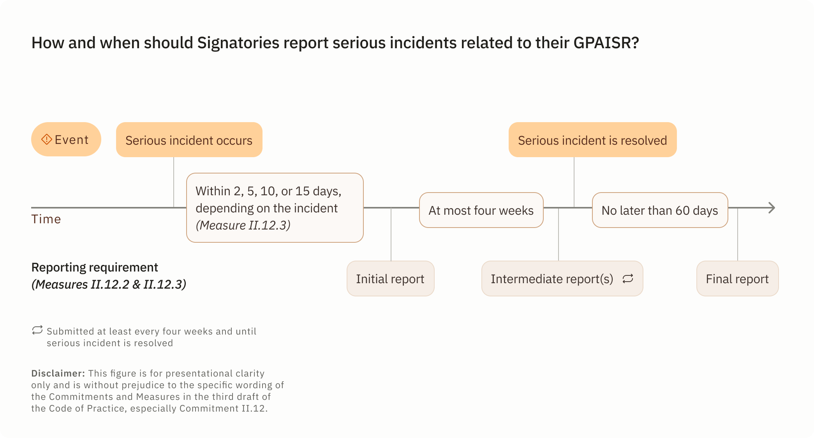

CodeofPractice
DRAFT 3 · 10/03/2025Disclaimer & Contributions
This website is an unofficial, best-effort service to make the Code of Practice more accessible to all observers and working group participants. It contains the full text of the third draft as well as two FAQs and an Explainer on parts of the Code. The respective Chairs and Vice Chairs have written these to address questions posed by many stakeholders.
While I strive for accuracy, this is not an official legal document. Always refer to the official PDF document provided by the AI Office for the authoritative version. Any discrepancies between this site and the official document should be considered errors on my part.
To help me improve this site please report issues or submit pull requests on Github and feel free to reach out about anything else via email.
Thanks for your support.
Alexander Zacherl
Opening statement by the Chairs and Vice-Chairs
As the Chairs and Vice-Chairs of the four Working Groups, we hereby present the third draft of the General-Purpose AI Code of Practice under the AI Act (the "Code"). Participants in the Working Groups and observers of the Code of Practice Plenary are welcome to submit written feedback on this draft by Sunday, 30 March 2025, via a dedicated survey shared with them.
We encourage all readers — whether they have engaged with previous drafts or not — to visit this website. It contains the text of this third draft as well as two FAQs and an Explainer on parts of the code and is aimed at making the Code more accessible to all observers and working group participants.
The third draft significantly advances the content compared to the second draft. In the upcoming final drafting round, it will be further improved based on stakeholder feedback. For this third draft, we have focused primarily on streamlining the structure of the Code, providing clarifications, adding essential details, and simplifying the Code.
This third draft of the Code addresses key considerations for providers of general-purpose AI models and providers of general-purpose AI models with systemic risk when complying with Chapter V of the AI Act, through four Working Groups working in close collaboration:
- Working Group 1: Transparency and copyright-related rules
- Working Group 2: Risk assessment for systemic risk
- Working Group 3: Technical risk mitigation for systemic risk
- Working Group 4: Governance risk mitigation for systemic risk
Working Group 1 Transparency applies to all general-purpose AI models, except for those that are released under a free and open-source licence satisfying the conditions specified in Article 53(2) AI Act and not classified as general-purpose AI models with systemic risk. Working Group 1 Copyright applies to all general-purpose AI models. Working Groups 2, 3, and 4 (Safety and Security Section) only apply to providers of general-purpose AI models classified as general-purpose AI models with systemic risk based on Article 51 AI Act.
Following a thorough review of the feedback received from stakeholders on the second draft, we have refined Commitments and Measures while maintaining the Code's Objectives. We present this third draft as the basis for the final drafting round, in which we will again draw on your feedback provided via the EU survey, in provider workshops, and in Working Group meetings. Like in previous drafting rounds, we have found your feedback extremely helpful, resulting in substantial changes. We therefore encourage stakeholders to continue providing comprehensive feedback on all aspects of the Code, including both new and unchanged elements. Your feedback will help shape the final version of the Code, which will play a crucial role in guiding the future of general-purpose AI model development and deployment.
We have once again included a high-level drafting plan which outlines our guiding principles for the Code, and the assumptions it is based on.
The AI Act came into force on 1 August 2024, stating that the final version of the Code should be ready by 2 May 2025. The third draft builds upon previous work while aiming to provide a "future-proof" Code, appropriate for the next generation of models which will be developed and released in 2025 and thereafter.
In formulating this third draft, we have been principally guided by the provisions in the AI Act as to matters within the scope of the Code. Accordingly, unless the context and definition contained within the Code indicates otherwise, the terms used in the Code refer to identical terms from the AI Act.
Like the first and second drafts, this document is the result of a collaborative effort involving hundreds of participants from across industry, academia, and civil society. It has been informed by three rounds of feedback, including on the previous two drafts, which has been insightful and instructive in our drafting process. We continue to be informed by the evolving literature on AI governance, international approaches (as specified in Article 56(1) AI Act), industry best practice, and the expertise and experience of providers and Working Group members.
Key features of the development process of the Code include:
- Drafted by Chairs and Vice-Chairs who were selected by the AI Office for their expertise, experience, independence (including absence of financial interests), and to ensure gender and geographic diversity.
- A multi-stakeholder consultation which closed in September and received 427 submissions
- A multi-stakeholder survey on the first draft of the Code which received 354 submissions, and on the second draft which received 336 submissions
- Provider workshops led by Chairs and Vice-Chairs
- Four specialised working groups led by Chairs and Vice-Chairs
- Meetings with representatives from EU Member States in the AI Board and from the European Parliament
Additional time for consultation and deliberation – both externally and internally – will be needed to further improve the Code. As a group of independent Chairs and Vice-Chairs, we strive to make this process as transparent and accessible to stakeholders as possible, aiming to share our work and our thinking as early as possible, while taking sufficient time to coordinate and discuss key questions within Working Groups. We count on your continued engaged collaboration and constructive criticism.
We welcome written feedback by the Code of Practice Plenary participants and observers by Sunday, 30 March 2025, via a dedicated survey shared with them.
Thank you for your support!
Working Group 1, Transparency
Nuria Oliver
(Co-Chair) &
Rishi Bommasani (Vice-Chair)
Working Group 1, Copyright
Alexander Peukert
(Co-Chair)
& Céline Castets-Renard (Vice-Chair)
Working Group 2
Matthias Samwald (Chair), Marta
Ziosi &
Alexander Zacherl (Vice-Chairs)
Working Group 3
Yoshua Bengio (Chair), Daniel
Privitera
& Nitarshan Rajkumar (Vice-Chairs)
Working Group 4
Marietje Schaake (Chair), Anka Reuel
&
Markus Anderljung (Vice-Chairs)
Drafting plan, principles, and assumptions
This third draft provides a more streamlined structure with more nuanced Commitments and Measures. In the upcoming final drafting round, it will be further improved based on stakeholder feedback. At this stage, it still does not contain the level of clarity and coherence that we expect in the final adopted version of the Code.
The Code first outlines the Commitments. Concretely, these are 2 Commitments for providers of general-purpose AI models and further 16 Commitments only for providers of general-purpose AI models classified as general-purpose AI models with systemic risk. Next, in separate documents, the Commitments are detailed out with respective Measures. The draft does not include KPIs and instead sharpened the reporting Commitments. Stakeholders should not expect the final adopted version of the Code to contain KPIs.
Related to transparency, Chairs have included a user-friendly Model Documentation Form which allows Signatories to easily document the necessary information in a single place. With regards to the review and adaptation of the Code, this draft includes an Appendix 2 with recommendations to the AI Office.
Below are some high-level principles we follow when drafting the Code:
- Alignment with EU Principles and Values – Commitments and Measures will be in line with general principles and values of the Union, as enshrined in EU law, including the Charter of Fundamental Rights of the European Union, the Treaty on European Union and Treaty on the Functioning of the European Union.
- Alignment with the AI Act and International Approaches – Commitments and Measures will contribute to a proper application of the AI Act. This includes taking into account international approaches (including standards or metrics developed by AI Safety Institutes, or standard-setting organisations), in accordance with Article 56(1) AI Act.
- Proportionality to Risks – Commitments and Measures should be proportionate to
risks, meaning they should be (i) suitable to achieve the desired end, (ii) necessary to achieve
the desired end, and (iii) should not impose a burden that is excessive in relation to the end
sought to be achieved. Some concrete applications of proportionality include:
- Commitments and Measures should be more stringent for higher risk tiers or uncertain risks of severe harm.
- Measures should be specific. While Commitments may be articulated at a higher level of generality, general-purpose AI model providers should have a clear understanding of how to meet Measures. Measures should be designed to be effective and robust against misspecification or any attempts of circumvention. The Code strives to accomplish this by, for example, avoiding unnecessary use of proxy terms or metrics. The AI Office will monitor and review Measures that may be susceptible to circumvention and other forms of misspecification.
- Commitments and Measures should differentiate, where applicable, between different types of risks, distribution strategies and deployment contexts of the concerned general-purpose AI model, and other factors that may influence the tiers of risk, and how risks need to be assessed and mitigated. For example, Commitments and Measures assessing and mitigating systemic risks might need to differentiate between intentional and unintentional risks, including instances of misalignment. Additionally, Commitments may need to be adapted to take into account the different tools providers have available to assess and mitigate systemic risk where model weights are freely released.
- Future-Proof – AI technology is changing rapidly. Measures should maintain the AI Office's ability to improve its assessment of compliance based on new information. Therefore, the Code shall strive to facilitate its rapid updating, as appropriate. It is important to find a balance between specific commitments on one hand, and the flexibility to update rapidly in light of technological and industry developments on the other. The Code can accomplish this by, for example, referencing dynamic sources of information that providers can be expected to monitor and consider in their risk assessment and mitigation. Examples of such sources could include incident databases, consensus standards, up-to-date risk registers, state-of-the-art risk management frameworks, and AI Office guidance. As technology evolves, it may also be necessary to articulate an additional set of Measures for specific general-purpose AI models, for example, certain models used in agentic AI systems.
- Proportionality to the size of the general-purpose AI model provider – Measures related to the obligations applicable to providers of general-purpose AI models should take due account of the size of the general-purpose AI model provider and allow simplified ways of compliance for small and medium enterprises (SMEs) and start-ups with fewer financial resources than those at the frontier of AI development, where appropriate.
- Support and growth of the ecosystem for safe, human centric and trustworthy AI – We recognise that the development, adoption, and governance of general-purpose AI models are global issues. Many Commitments in this draft are intended to enable and support cooperation between different stakeholders, for example by sharing general-purpose AI safety infrastructure and best practices amongst model providers, or by encouraging the participation of civil society, academia, third parties, and government organisations in evidence collection. We promote further transparency between stakeholders and increased efforts to share knowledge and cooperate in building a collective and robust evidence base for safe, human centric and trustworthy AI in line with Article 56(1) and (3), Recital 1, and Recital 116 AI Act. We also acknowledge the positive impact that open-source models have had on the development of safe, human centric and trustworthy AI.
- Innovation in AI governance and risk management – We recognise that determining the most effective methods for understanding and ensuring the safety of general-purpose AI models remains an evolving challenge. The Code should encourage providers to compete in and advance the state-of-the-art in AI safety governance and related evidence collection methods and practices. When providers can demonstrate equal or superior safety outcomes through alternative approaches that are less burdensome, these innovations should be recognised as improving the state of the art of AI governance and evidence and we should support their wider adoption.
The current draft is written with the assumption that there will only be a small number of both general-purpose AI models with systemic risk and providers thereof. That assumption seems to be confirmed by the information provided from the AI Office accompanying the publication of this draft. The AI Office plans to publish guidance in due time to clarify the scope of the respective AI Act rules in proximity to the publication of the final Code of Practice, including topics addressed in the dedicated Q&A such as downstream modifiers to which obligations should only apply in clearly specified cases. In particular, we want to highlight that even if modifications of general-purpose AI models increase the number of providers in scope, the modifiers’ obligations under Articles 53 and 55 AI Act should be limited to the extent of their respective modifications, as appropriate. We expect more clarifications from the AI Office on these points on an ongoing basis, as stated in the Q&A.
Preamble
- The Signatories of this Code of Practice (hereafter, "Code") recognise the importance of improving the functioning of the internal market and creating a level playing field for the development, placing on the market, and use of human-centric and trustworthy artificial intelligence (hereafter, "AI"), while ensuring a high level of protection of health, safety, and the fundamental rights enshrined in the Charter, including democracy, the rule of law, and environmental protection, against harmful effects of AI in the Union and supporting innovation as emphasised in Article 1(1) AI Act. The Code shall be interpreted in this context.
- The Signatories recognise that this Code is to be interpreted in conjunction and in accordance with any European AI Office (hereafter, "AI Office") guidance on the AI Act and with applicable Union laws.
- Whenever the Code refers to providers of general-purpose AI models it shall encompass providers of general-purpose AI models with systemic risk (hereafter "GPAISRs" or "GPAISR"), too. Whenever the Code refers to providers of GPAISRs it shall not encompass providers of other general-purpose AI models. This shall only include general-purpose AI models that are within the scope of the AI Act.
- The Signatories recognise that the Code serves as a guiding document for demonstrating compliance with the AI Act, while recognising that adherence to the Code does not constitute conclusive evidence of compliance with the AI Act.
- The Signatories recognise the importance of regularly reporting to the AI Office on their implementation of the Code and its outcomes (Article 56(5) AI Act), including to facilitate the regular monitoring and evaluation of the Code's adequacy by the AI Office and the Board (Article 56(6) AI Act).
- The Signatories recognise that the Code shall be subject to regular review by the AI Office and the Board (Article 56(6) AI Act) and that the AI Office may encourage and facilitate updates of the Code to reflect advances in AI technology, emerging standards, societal changes, and emerging systemic risks (Article 56(8) AI Act), without prejudice to the need for Signatories to sign such updates.
- The Signatories recognise that the Code may serve as a bridge until the adoption of a harmonised standard. Updates may be needed to facilitate a gradual transition towards future standards.
- The Signatories recognise that the absence of specific Commitments or Measures within this Code does not absolve providers of GPAISRs from their responsibility to assess and mitigate systemic risks.
- The Signatories recognise the importance of working in partnership with the AI Office to foster collaboration between providers of general-purpose AI models, researchers, and regulatory bodies to address emerging challenges and opportunities in the AI landscape.
The Objectives of the Code are as follows:
- Assisting providers of general-purpose AI models to effectively comply with their obligations under the AI Act - if assessed as adequate by the AI Office and the Board (Article 56(6) AI Act). The Code should also enable the AI Office to assess compliance of providers who choose to rely on the Code to demonstrate compliance with their obligations under the AI Act. This can involve, e.g., allowing sufficient visibility into trends in the development, making available, and use of general-purpose AI models, particularly of the most advanced models.
- Assisting providers of general-purpose AI models to effectively keep up-to-date technical documentation of their models and to effectively ensure a good understanding of general-purpose AI models along the entire AI value chain, both to enable the integration of such models into downstream products and to fulfil subsequent obligations under the AI Act or other regulations (see Articles 53(1)(a) and (b) and Recital 101 AI Act).
- Assisting providers of general-purpose AI models to effectively comply with Union law on copyright and related rights and increase transparency on the data that is used in the pre-training and training of general-purpose AI models (see Articles 53(1)(c) and (d) and Recitals 106 and 107 AI Act).
- Assisting providers of GPAISRs to effectively and continuously assess and mitigate systemic risks, including their sources, that may stem from the development, the placing on the market, or the use of GPAISRs (see Article 55(1) and Recital 114 AI Act).
I. Commitments by Providers of General-Purpose AI Models
Transparency Section
Commitment I.1. Documentation
In order to fulfil the obligations in Article 53(1), points (a) and (b) AI Act, Signatories commit to drawing up and keeping up-to-date model documentation in accordance with Measure I.1.1, providing relevant information to providers of AI systems who intend to integrate the general-purpose AI model into their AI systems (downstream providers hereafter), and to the AI Office upon request (possibly on behalf of national competent authorities when this is strictly necessary for the exercise of their supervisory tasks under the AI Act, in particular to assess the compliance of high-risk AI systems built on general-purpose AI models where the provider of the system is different from the provider of the model [Footnote: See Article 75(1) and (3) AI Act and Article 88(2) AI Act.]), in accordance with Measure I.1.2, and ensuring quality, security, and integrity of the documented information in accordance with Measure I.1.3. These Measures do not apply to providers of open-source AI models satisfying the conditions specified in Article 53(2) AI Act, unless the models are general-purpose AI models with systemic risk.
Copyright Section
Commitment I.2. Copyright policy
In order to fulfil the obligation to put in place a policy to comply with Union law on copyright and related rights, and in particular to identify and comply with, including through state-of-the-art technologies, a reservation of rights expressed pursuant to Article 4(3) Directive (EU) 2019/790 pursuant to Article 53(1), point (c) AI Act, Signatories commit to drawing up, keeping up-to-date, and implementing a copyright policy in accordance with Measure I.2.1, as well as adopting Measures I.2.2—I.2.6 for their general-purpose AI models placed on the EU market.
II. Commitments by Providers of General-Purpose AI Models with Systemic Risk
Safety and Security Section
Commitment II.1. Safety and Security Framework
Signatories commit to adopting and implementing a Safety and Security Framework (hereafter, "the Framework") that will: (1) apply to the Signatories' GPAISRs; and (2) detail the systemic risk assessment, systemic risk mitigation, and governance risk mitigation measures and procedures that Signatories intend to adopt to keep systemic risks stemming from their GPAISRs within acceptable levels.
Commitment II.2. Systemic risk assessment and mitigation along the entire model lifecycle, including during model development
Signatories commit to conducting systemic risk assessment systematically at appropriate points along the entire model lifecycle, in particular before making the model available on the market. Specifically, Signatories commit to starting to assess and mitigate systemic risks during the development of a GPAISR, as specified in the Measures for this Commitment.
Commitment II.3. Systemic risk identification
Signatories commit to selecting and further characterising systemic risks stemming from their GPAISRs that are significant enough to warrant further assessment and mitigation, as specified in the Measures for this Commitment.
Commitment II.4. Systemic risk analysis
As part of systemic risk assessment, Signatories commit to carrying out a rigorous analysis of the systemic risks identified pursuant to Commitment II.3 in order to understand the severity and probability of the systemic risks. Signatories commit to carrying out systemic risk analysis with varying degrees of depth and intensity, as appropriate to the systemic risk stemming from the relevant GPAISR and as specified in the Measures for this Commitment. Whenever systemic risk mitigations are implemented, Signatories commit to considering their effectiveness and robustness as part of systemic risk analysis.
As further specified in the Measures for this Commitment, Signatories commit to making use of a range of information and methods in their systemic risk analysis including model-independent information and state-of-the-art model evaluations, taking into account model affordances, safe originator models, and the context in which the model may be made available on the market and/or used and its effects.
Commitment II.5. Systemic risk acceptance determination
Signatories commit to determining the acceptability of the systemic risks stemming from their GPAISRs by comparing the results of their systemic risk analysis (pursuant to Commitment II.4) to their pre-defined systemic risk acceptance criteria (pursuant to Measure II.1.2), in order to ensure proportionality between the systemic risks of the GPAISR and their mitigations. Signatories commit to using this comparison to inform the decision of whether or not to proceed with the development, the making available on the market, and/or the use of their GPAISR, as specified in the Measures for this Commitment.
Commitment II.6. Safety mitigations
Signatories commit, as specified in the Measures for this Commitment, to: (1) implementing technical safety mitigations along the entire model lifecycle that are proportionate to the systemic risks arising from the development, the making available on the market, and/or the use of GPAISRs, in order to reduce the systemic risks of such models to acceptable levels, and further reduce systemic risk as appropriate, in accordance with this Code; and (2) ensuring that safety mitigations are proportionate and state-of-the-art.
Commitment II.7. Security mitigations
Signatories commit to mitigating systemic risks that could arise from unauthorised access to unreleased model weights of their GPAISRs and/or unreleased associated assets. Associated assets encompass any information critical to the training of the model, such as algorithmic insights, training data, or training code.
Consequently, Signatories commit to implementing state-of-the-art security mitigations designed to thwart such unauthorised access by well-resourced and motivated non-state-level adversaries, including insider threats from humans or AI systems, so as to meet at least the RAND SL3 security goal or equivalent, and achieve higher security goals (e.g. RAND SL4 or SL5), as specified in the Measures for this Commitment.
Commitment II.8. Safety and Security Model Reports
Signatories commit to reporting to the AI Office about their implementation of the Code, and especially the application of their Framework to the development, making available on the market, and/or use of their GPAISRs, by creating a Safety and Security Model Report (hereafter, a "Model Report") for each GPAISR which they make available on the market, which will document, as specified in the Measures for this Commitment: (1) the results of systemic risk assessment and mitigation for the model in question; and (2) justifications of decisions to make the model in question available on the market.
Commitment II.9. Adequacy assessments
Signatories commit to assessing the adequacy of their Framework, the adoption and implementation of which they have committed to under Commitment II.1, and to updating it based on the findings as specified in the Measures for this Commitment.
Commitment II.10. Systemic risk responsibility allocation
For activities concerning systemic risk assessment and mitigation for their GPAISRs, Signatories commit, as specified in the Measures for this Commitment, to: (1) clearly defining and allocating responsibilities for managing systemic risk from their GPAISRs across all levels of the organisation; (2) allocating appropriate resources to actors who have been assigned responsibilities for managing systemic risk; and (3) promoting a healthy risk culture.
Signatories commit to allocating appropriate levels of responsibility and resources proportionately to, at least, the Signatory's organisational complexity and governance structure, and the systemic risks stemming from their GPAISRs.
Commitment II.11. Independent external assessors
Before placing a GPAISR on the market, Signatories commit to obtaining independent external systemic risk assessments, including model evaluations, unless the model can be deemed sufficiently safe, as specified in Measure II.11.1. After placing the GPAISR on the market, Signatories commit to facilitating exploratory independent external assessments, including model evaluations, as specified in Measure II.11.2.
Commitment II.12. Serious incident reporting
Signatories commit, to the extent and under the conditions specified in Measures II.12.1 to II.12.4, to setting up processes for keeping track of, documenting, and reporting to the AI Office and, as appropriate, to national competent authorities without undue delay relevant information about serious incidents throughout the entire model lifecycle and possible corrective measures to address them, with adequate resourcing of such processes relative to the severity of the serious incident and the degree of involvement of their model.
Commitment II.13. Non-retaliation protections
Signatories commit to not retaliating against any worker providing information about systemic risks stemming from the Signatories' GPAISRs to the AI Office or, as appropriate, to national competent authorities, and to at least annually informing workers of an AI Office mailbox designated for receiving such information, if such a mailbox exists.
Commitment II.14. Notifications
Signatories commit, as specified in the Measures for this Commitment, to: (1) notifying the AI Office of relevant information regarding their general-purpose AI models meeting the condition for classification as GPAISRs; and (2) regularly notifying the AI Office of the implementation of the Commitments and Measures of this Code. For the purpose of assessing the implementation of this Code through the AI Office, Signatories commit to offering clarifications, including via further documentation or interviews, where requested by the AI Office.
Commitment II.15. Documentation
Signatories commit to documenting relevant information under the AI Act and the Code, as specified in Measure II.15.1.
Commitment II.16. Public transparency
Signatories commit to publishing information relevant to the public understanding of systemic risks stemming from their GPAISRs, where necessary to effectively enable assessment and mitigation of systemic risks, to the extent and under the conditions specified in Measure II.16.1.
The foregoing Commitments are supplemented by Measures found in the relevant Transparency, Copyright or Safety and Security section in the separate accompanying documents. [Note: On this site shown as seperate sub-pages.]
Introductory note by the Chair and Vice-Chair of the Transparency Section
Frequently Asked Questions: Transparency
This FAQ section provides additional explanatory information written and shared by the (vice) chairs for WG1-Transparency. In case of any discrepancies between this section and the legal text of the code, the legal text always takes precedence.
Q: 1. When do providers need to report information to the AI Office (AIO) and/or National Competent Authorities (NCA)?
A: Providers do not need to proactively report information to the AI Office and/or the National Competent Authorities. Instead, they must draw and keep up-to-date the documentation specified in the transparency section of the Code of Practice so that it is available for the AIO or NCA upon request. When these requests are made, they must be legally justified and will generally only be for the relevant elements of documentation, not all the documentation as a whole. Note that open-source GPAI models that do not pose systemic risk are exempt from this obligation.
Q: 2. If a GPAI model provider has produced a GPAI model by modifying another model, what are their obligations?
A: The AIO, as opposed to the CoP and its chairs, will clarify the conditions under which the modification of an existing GPAI model constitutes a new GPAI model with AI Act obligations. If the derivative model has AI Act GPAI obligations, then the provider need only document the modification and link to the original model's Model Documentation if they have access to it.
Q: 3. Will the CoP section on Transparency describe the specific cybersecurity practices that the AIO and/or NCAs will implement to secure information provided to these entities?
A: No. These government bodies have cybersecurity obligations regarding the documentation to be shared by GPAI model providers, but it is the responsibility of the AIO and/or NCAs --and not of the CoP or its chairs-- to clarify what cybersecurity protections they will implement.
Q: 4. How does a provider of an open-source model with no use restrictions satisfy the obligations for an Acceptable Use Policy and a description of intended uses?
A: We provide guidance in the transparency template, including the option of providing no Acceptable Use Policy if none exists and indicating N/A if describing intended uses is incompatible with the model license.
Q: 5. How does a GPAI model provider satisfy the obligations for measuring computational and energy costs in the absence of standards?
A: Given the lack of established standards, the Code of Practice does not refer to standards to compute these measures at this time. However, the absence of standards does not absolve companies of their AI Act obligations on these matters. Therefore, the obligations instead require a description of the measurement methodology, including the potential use of estimates, without prescribing any specific methodology at this time. Consistent with the text of the AI Act, a future delegated act on these topics is acknowledged in the Code of Practice.
The Transparency section of the Code of Practice describes three Measures which Signatories commit to taking to comply with their transparency obligations under Article 53(1)(a) and (b) and the corresponding Annexes XI and XII AI Act.
In this third draft, to streamline fulfilment of the commitments contained in Measure I.1.1 and facilitate Signatories' compliance, we have included a user-friendly Model Documentation Form which allows Signatories to easily document the necessary information in a single place.
The Form clearly indicates for each item whether it is intended for downstream providers, the AI Office or national competent authorities. Whilst information intended for downstream providers should be made available to them proactively, information intended for the AI Office or national competent authorities is only to be made available following a request from the AI Office, either ex officio or based on a request to the AI Office from national competent authorities. Such requests will state the legal basis and purpose of the request and will concern only items from the Form strictly necessary for the AI Office to fulfil its tasks under the AI Act at the time of the request, or strictly necessary for national competent authorities to exercise their supervisory tasks under the AI Act at the time of the request, in particular to assess compliance of high-risk AI systems built on general-purpose AI models where the provider of the system is different from the provider of the model.
Finally, in accordance with Article 78 AI Act, the recipients of any of the information contained in the Model Documentation Form are obliged to respect the confidentiality of the information obtained, in particular intellectual property rights and confidential business information or trade secrets, and to put in place adequate and effective cybersecurity measures to protect the security and confidentiality of the information obtained.
Working Group 1, Transparency
Nuria Oliver
(Co-Chair) &
Rishi Bommasani (Vice-Chair)
Recitals for the Transparency Section
Whereas:
- The Signatories recognise the particular role and responsibility of providers of general-purpose AI models along the AI value chain, as the models they provide may form the basis for a range of downstream systems, often provided by downstream providers that need significant understanding of the models and their capabilities, both to enable the integration of such models into their products and to fulfil their obligations under the AI Act (see Recital 101 AI Act).
- The Signatories recognise that in the case of a modification or fine-tuning of a model, the obligations for providers should be limited to that modification or fine-tuning to safeguard proportionality (see Recital 109 AI Act).
Commitment I.1 Documentation
LEGAL TEXT
Articles 53(1)(a), 53(1)(b), 53(2), 53(7), and Annexes XI and XII AI Act
In order to fulfil the obligations in Article 53(1), points (a) and (b) AI Act, Signatories commit to drawing up and keeping up-to-date model documentation in accordance with Measure I.1.1, providing relevant information to providers of AI systems who intend to integrate the general-purpose AI model into their AI systems (downstream providers hereafter), and to the AI Office upon request (possibly on behalf of national competent authorities upon request to the AI Office when this is strictly necessary for the exercise of their supervisory tasks under the AI Act, in particular to assess compliance of high-risk AI systems built on general-purpose AI models where the provider of the system is different from the provider of the model [Footnote: See Article 75(1) and (3) AI Act and Article 88(2) AI Act.]), in accordance with Measure I.1.2, and ensuring quality, security, and integrity of the documented information in accordance with Measure I.1.3. These Measures do not apply to providers of open-source AI models satisfying the conditions specified in Article 53(2) AI Act, unless the models are general-purpose AI models with systemic risk.
Measure I.1.1. Drawing up and keeping up-to-date model documentation
Signatories, when placing a general-purpose AI model on the market, commit to having prepared a document entitled "Information and Documentation about the General-Purpose AI Model" (hereafter Model Documentation) containing all the information referred to in the Model Documentation Form below.
Signatories commit to reporting the information requested in the Computational Resources and Energy Consumption sections in consistency with any delegated act adopted in accordance with Article 53(5) AI Act to detail measurement and calculation methodologies with a view to allowing for comparable and verifiable documentation.
In case of relevant changes in the information contained in the Model Documentation, Signatories commit to update the Model Documentation to reflect the new information while keeping previous versions of the Model Documentation for a period ending 10 years after the model has been placed on the market.
Measure I.1.2. Providing relevant information
Signatories, when placing a general-purpose AI model on the market, commit to publicly disclosing via their website, or via another means if they do not have a website, contact information for the AI Office and downstream providers to request access to the relevant information contained in the Model Documentation.
Upon a request from the AI Office pursuant to Articles 91 or 75(3) AI Act for one or more elements of the Model Documentation that are strictly necessary for the AI Office to fulfil its tasks under the AI Act or for national competent authorities when this is strictly necessary for the exercise of their supervisory tasks under the AI Act, in particular to assess compliance of high-risk AI systems built on general-purpose AI models where the provider of the system is different from the provider of the model [Footnote: See Article 75(1) and (3) AI Act and Article 88(2) AI Act.], Signatories commit to providing the relevant elements contained in the most up-to-date Model Documentation, or otherwise the necessary additional information, subject to the confidentiality safeguards and conditions provided for under Articles 53(7) and 78 AI Act.
Signatories commit to providing to downstream providers the information contained in the most up-to-date Model Documentation and intended for downstream providers, subject to the confidentiality safeguards and conditions provided for under Articles 53(7) and 78 AI Act. Furthermore, subject to the same confidentiality safeguards and conditions, Signatories commit to providing additional information necessary to enable downstream providers to have a good understanding of the capabilities and limitations of the general-purpose AI model and to comply with their obligations pursuant to the AI Act.
Signatories commit to taking all the above-described actions in a timely manner.
Signatories are encouraged to consider whether the documented information can be disclosed, in whole or in part, to the public to promote public transparency. Some of this information may also be required in a summarised form as part of the public summary for training content that providers must make publicly available under Article 53(1), point (d) AI Act to be determined in a template to be provided by the AI Office.
Measure I.1.3. Ensuring quality, integrity, and security of information
Signatories commit to ensuring that the documented information is controlled for quality and integrity, retained as evidence of compliance with obligations of the AI Act, and protected from unintended alterations. In the context of drawing-up, updating, and controlling the quality and security of the information and records, Signatories are encouraged to follow the established protocols and technical standards.
Model Documentation Form
Below is a static, non-editable version of the Model Documentation Form. In this version, the input fields cannot be filled in, and the button at the bottom of the form—intended to generate a version of the form containing only information intended for downstream providers—is non-functional. In the final draft of the Code, this Form will be fully interactive and editable
Introductory note by the Chair and Vice-Chair of the Copyright Section
The Copyright section of the Code of Practice describes a set of Measures that Signatories commit to taking in order to comply with their obligation under Article 53(1)c) AI Act. The third draft retains core elements of the first two drafts in a simplified and clearer form. Measure I.2.1 (former Measures 2.1 and 2.2, Draft 2) specifies what it means to "put in place" a policy to comply with Union copyright law and clarifies the set of Measures covered. While Measures I.2.2 and I.2.3 (former Measures 2.4-2.8, Draft 2) regulate the mining of web-crawled content, Measure I.2.4 (former Measure 2.3) concerns the mining of protected content not web-crawled by the Signatory. Measure I.2.5 (former Measures 2.9 and 2.10, Draft 2) sets out commitments to mitigate the risk that a downstream AI system repeatedly generates infringing output. Finally, Measure I.2.6 (former Measure 2.11, Draft 2) provides for commitments to designate a point of contact and to allow for the submission of complaints concerning the non-compliance of Signatories with their commitments under the copyright Section. As indicated in the General Introduction, this Section no longer contains separate KPIs. However, the features of some KPIs have been incorporated into the Measures (e.g. description of the policy in a single document, easily accessible information on the contact point and the possibility to lodge complaints). The recitals clarify that this Section is without prejudice to the application and enforcement of Union law on copyright and related rights and to commercial agreements between the Signatories and rightsholders authorising the use protected content.
Working Group 1, Copyright
Alexander Peukert
(Co-Chair)
& Céline Castets-Renard (Vice-Chair)
Recitals for the Copyright Section
Whereas:
- This Section aims to contribute to the proper application of the obligation of providers of general-purpose AI models placed on the Union market to put in place a policy to comply with Union law on copyright and related rights pursuant to Article 53(1), point (c) AI Act.
- The compliance with the commitments under this Section should be commensurate and proportionate to the size and capacities of providers, taking due account of the interests of SMEs, including startups.
- This Section is without prejudice to and in no way affects the application and enforcement of Union law on copyright and related rights.
- This Section is without prejudice to commercial agreements between the Signatories and rightsholders authorising the use of works and other protected subject matter.
Commitment I.2. Copyright policy
LEGAL TEXT
Article 53(1)(c) AI Act
In order to fulfil the obligation to put in place a policy to comply with Union law on copyright and related rights, and in particular to identify and comply with, including through state-of-the-art technologies, a reservation of rights expressed pursuant to Article 4(3) of Directive (EU) 2019/790 pursuant to Article 53(1), point (c) AI Act, Signatories commit to drawing up, keeping up-to-date, and implementing a copyright policy in accordance with Measure I.2.1, as well as adopting Measures I.2.2—I.2.6 for their general-purpose AI models placed on the EU market.
Measure I.2.1. Draw up, keep up-to-date and implement a copyright policy
- Signatories will draw up, keep up-to-date and implement a policy to comply with Union law on copyright and related rights. This policy will address all commitments pursuant to this Section and will be described in a single document approved by the Signatory. Signatories will assign responsibilities within their organisation for the implementation and overseeing of this policy.
- Signatories are encouraged to make publicly available and keep up-to-date a summary of their copyright policy.
Measure I.2.2. Reproduce and extract only lawfully accessible copyright-protected content when crawling the World Wide Web
In order to ensure that Signatories will only reproduce and extract lawfully accessible works and other protected subject matter if they use web-crawlers or have such web-crawlers be used on their behalf to crawl, scrape and/or otherwise compile data for the purpose of text and data mining according to Article 2(2) of Directive (EU) 2019/790 and the training of their general-purpose AI models, Signatories will:
- not circumvent effective technological measures as defined in Article 6(3) of Directive (EC) 2001/29 designed to prevent or restrict access to works and other protected subject matter, such as paywalls, and
- make reasonable efforts to exclude from their web-crawling Internet domains that make available to the public copyright-infringing content on a commercial scale and have no substantial legitimate uses ("piracy domains") and that are recognised as such by courts or public authorities in the European Union and the European Economic Area. A list of hyperlinks to relevant piracy domain lists issued by the relevant bodies in the European Union and the European Economic Area is to be made publicly available on an EU website.
Measure I.2.3. Identify and comply with rights reservations when crawling the World Wide Web
- In order to ensure that Signatories will identify and comply with, including through
state-of-the-art technologies, machine-readable reservations of rights expressed pursuant to
Article
4(3)
of Directive (EU)
2019/790 if they use web-crawlers or have such web-crawlers used
on their behalf to crawl, scrape and/or otherwise compile data for the purpose of text and data
mining according to Article
2(2)
of Directive (EU)
2019/790 and the training of their
general-purpose AI models, Signatories will
- employ web-crawlers that read and follow instructions expressed in accordance with the Robot Exclusion Protocol (robots.txt), as specified in the Internet Engineering Task Force (IETF) Request for Comments No. 9309, and any subsequent version of this IETF standard, and
- make best efforts to identify and comply with other appropriate machine-readable protocols to express rights reservations pursuant to Article 4(3) of Directive (EU) 2019/790, for example through asset-based or location-based metadata, that have either resulted from a cross-industry standard-setting process as referred to in paragraph 3 of this Measure or are state-of-the-art and widely adopted by rightsholders, considering different cultural sectors, and generally agreed through an inclusive process based on bona fide discussions to be facilitated at EU level with the involvement of rightsholders, AI providers and other relevant stakeholders as a more immediate solution, while anticipating the development of cross-industry standards referred in paragraph 3.
- This commitment is without prejudice to the right of rightsholders to expressly reserve the use of lawfully accessible works and other protected subject matter for the purposes of text and data mining pursuant to Article 4(3) of Directive (EU) 2019/790 in any appropriate manner, such as machine-readable means in the case of content made publicly available online.
- In due consideration of relevant international and European standard-setting processes, Signatories are encouraged to support relevant standardisation efforts and engage on a voluntary basis in bona fide discussions with other relevant stakeholders, including rightsholders, with the aim to develop appropriate machine-readable standards to express a rights reservation pursuant Article 4(3) of Directive (EU) 2019/790.
- Signatories will take reasonable measures to enable affected rightsholders to obtain information about the web crawlers employed and their robot.txt features and the measures that a Signatory adopts to identify and comply with rights reservations expressed pursuant to Article 4(3) of Directive (EU) 2019/790 at the time of crawling, for example by making public such information and syndicating a web feed that covers every update of the website informing about the rights reservation compliance.
- Signatories that also provide an online search engine as defined in Article 3(j) Regulation (EU) 2022/2065 or control such a provider are encouraged to take appropriate measures to ensure that its compliance with a rights reservation expressed in accordance with paragraph 1 of this Measure does not negatively affect the findability of the content, for which a rights reservation has been expressed, through their search engine.
Measure I.2.4. Obtain adequate information about protected content not web-crawled by the Signatory
- If Signatories, for the training of their general-purpose AI models, mine works and other protected subject matter according to Article 2(2) of Directive (EU) 2019/790 that they have obtained by other means than by web-crawling or by web-crawling on their behalf and without an authorisation by the respective rightsholders or their authorised representatives, they will make reasonable efforts to obtain adequate information (e.g., by checking the information available on the website of the third parties or requesting information) as to whether works and other protected subject matter that have been scraped or crawled from the internet were collected by employing web-crawlers that read and follow instructions expressed in accordance with the Robot Exclusion Protocol (robots.txt), as specified in the Internet Engineering Task Force (IETF) Request for Comments No. 9309, and any subsequent version of this IETF standard.
- This Measure does not imply a commitment to verify or proceed to a work-by-work assessment of the data mentioned in paragraph 1 of this Measure in terms of copyright compliance.
Measure I.2.5. Mitigate the risk of production of copyright-infringing output
- In order to mitigate the risk that a downstream AI system, into which a generative
general-purpose AI model is integrated, repeatedly generates output that infringes copyrights or
related rights as protected according to Union law on copyright and related rights, Signatories
will
- make reasonable efforts to mitigate the risk that a model memorizes copyrighted training content to the extent that it repeatedly produces copyright-infringing outputs and
- prohibit copyright-infringing uses of a model in their acceptable use policy, terms and conditions, or other equivalent documents.
- This Measure applies irrespective of whether a Signatory vertically integrates the model into its own AI system(s) or whether the model is provided to another entity based on contractual relations. The commitment to prohibit copyright-infringing uses pursuant to paragraph 1, point b of this Measure does not apply to general-purpose AI models that are released under a free and open-source licence.
Measure I.2.6. Designate a point of contact and enable the lodging of complaints
- Signatories will designate a point of contact for communication with affected rightsholders and provide easily accessible information about it.
- Signatories will put a mechanism in place to allow affected rightsholders and their authorised representatives, including collective management organisations, to submit, by electronic means, sufficiently precise and adequately substantiated complaints concerning the non-compliance of Signatories with their commitments pursuant to this Section and provide easily accessible information about it. Where complaints by rightsholders are manifestly unfounded or excessive, in particular because of their repetitive character, Signatories may refuse to act on the complaint.
Commitments by Providers of GPAISRs
Frequently Asked Questions: Safety & Security
This FAQ, written and shared by the (vice) chairs of Working Groups 2–4, aims to provide answers to some questions that the chairs frequently receive about the part of the Code of Practice that pertains to general-purpose AI models with systemic risk (GPAISRs), also called the “Safety and Security Section” of the Code. It is intended to support readers’ understanding of the Code of Practice; if and to the extent that this FAQ contradicts the Code, the Code takes precedence.
Q: What is the purpose of the Code of Practice?
A: The Code of Practice provides detail on how companies can comply with some of the obligations in the AI Act.
The AI Act imposes certain obligations on providers of general-purpose AI models (GPAIs) and general-purpose AI models with systemic risks (GPAISRs). Since these obligations are formulated at a relatively high level of abstraction and as there is a lack of relevant industry standards, it can be challenging for AI providers to know how to comply with these obligations. In light of that, the role of the Code is to give providers of GPAI and GPAISR a blueprint of one way to comply with the AI Act, so as to provide more legal certainty.
When the Code is finished, providers can choose to sign and adhere to it. Meanwhile, the AI Board (which consists of representatives from all EU Member States) and the European AI Office ("AI Office") will assess whether the Code covers the relevant obligations in the Act, after which the AI Office can approve the Code and give it "general validity within the Union" (see Article 56(6) of the AI Act). If it does, then adherence to the Code of Practice becomes a means to demonstrate compliance with the AI Act.
Q: How is the Code of Practice written?
A: The drafting of the Code is an iterative process that benefits from repeated input from companies and other stakeholders and has now seen the publication of the third and penultimate draft.
As chairs, we process the input from the various stakeholders to write the Code. Chairs are independent experts that have been appointed by the AI Office after an open application process. For the Safety and Security Section of the Code, we are a group of nine co-chairs, including, for example, a former employee of a leading AI company, a former employee of small AI startups, the second most-cited AI researcher in the world, and a former member of the European Parliament. More about the chairs and how we were selected can be found here.
Q: What is the timeline for the drafting of the Code?
A: The drafting process started in October 2024. The AI Act states that the Code should be finished by 2 May 2025, after which providers can choose to sign it. The AI Office and the AI Board will also assess whether the Code covers the relevant obligations of the AI Act, and the AI Office may approve the Code. The AI Act's obligations specific to GPAISR providers come into force in August 2025, with a one-year grace period during which the AI Office cannot issue fines for non-compliance.
Q: What is the Safety and Security Section of the Code of Practice?
A: The Safety and Security Section of the Code specifies one way of complying with one subset of the AI Act's GPAI obligations: the obligations for GPAISRs.
Q: To whom is the Safety and Security Section of the Code relevant?
A: It is only relevant to the small number of AI companies that are subject to the AI Act's obligations concerning GPAI that present systemic risk. The AI Act (Article 3) defines systemic risk as being specific to high-impact capabilities, i.e. capabilities that match or exceed the capabilities of the most advanced GPAI, that have a significant impact on the Union market (as stipulated in the AI Act). The Act's obligations for GPAISR should therefore only apply to a small number of companies.
As the drafters of the Safety and Security Section of the Code, we have no discretion over how the regulator will interpret the GPAISR definition in practice, but have been writing the Safety and Security Section assuming that only about 5-15 companies will be in scope of the AI Act's GPAISR obligations at any given point in time.
Q: What are the guiding principles as the Code and specifically its Safety and Security Section is being drafted?
A: In summary, our guiding principles for the drafting of the entire Code, including its Safety and Security Section, are:
- Alignment with EU principles, rights and values. The Code should be in line with the values of the Union that are enshrined, for example, in the EU Charter of Fundamental Rights.
- Alignment with the AI Act and international approaches. The Code should contribute to an appropriate application of the AI Act, detailing the requirements for GPAI models. It should also, where appropriate, align with international approaches.
- Proportionality to risks. Compliance measures related to any given risk should be effective and not excessively burdensome.
- A future-proof approach. In the face of potential rapid technological developments, the Code needs to be able to be updated in an agile way.
- Proportionality to the size of a GPAI model provider. Where appropriate, compliance requirements should take into account the size of a GPAI model provider company, in order to offer simplified ways of compliance for smaller companies and start-ups with fewer financial resources than those at the frontier of AI development.
- Support and growth of the AI safety ecosystem. The Code should aim to contribute to an ecosystem in which stakeholders feel empowered to innovate within a structured and predictable framework, whilst nurturing a culture of shared responsibility and progress.
- Innovation in AI governance and risk management. The Code should facilitate and support innovation in AI governance and risk management to improve our ability to assess and mitigate systemic risks.
For more detail, see the section titled "Drafting plan, principles, and assumptions" in the third draft of the Code.
Q: Is the Safety and Security Section of the Code relevant to providers of open-source models?
A: While open-source models are exempt from some requirements in the AI Act (Article 53), if an open-source model is a GPAISR, its provider is not exempt from the AI Act's obligations. As such, providers of open-source GPAISRs still need to, for example, assess and mitigate systemic risks in a manner proportionate to those risks.
Of course, open-source releases change what providers can do in terms of risk assessment and mitigation. For example, it may be harder to predict how a model will be used. At the same time, open-source releases can offer societal benefits beyond those of closed models.
We have taken this into account in drafting the Safety and Security Section of the Code. For example, we have given providers options for how they conduct post-market monitoring – e.g. given that providers of open-source GPAISRs would struggle to monitor outputs from their models – and by clarifying that release decisions ought to take into account the benefits as well as the accompanying risks of the GPAISR when made available on the market. We welcome suggestions on how the Safety and Security Section of the Code can be further adjusted for open-source GPAISR releases.
Q: Will all models over 10^25 FLOP be automatically in scope of the AI Act's GPAISR requirements?
A: No. The 10^25 FLOP training compute threshold (AI Act, Article 51) provides a rebuttable presumption of classification as GPAISR. However, models trained with more FLOP may not be classified as GPAISR, and models trained with less FLOP may be classified as GPAISR. Overall, decisions on how to interpret the scope of, apply, and enforce the AI Act's GPAISR obligations are to be made by the AI Office. We, as the drafters of the Safety and Security Section of the Code, have no authority to determine these matters.
We have been writing the Safety and Security Section assuming that only about 5-15 companies will be in scope of the AI Act's GPAISR obligations at any given point in time. We base this assumption on the AI Act defining systemic risk as being specific to high-impact capabilities, i.e. capabilities that match or exceed the capabilities of the most advanced GPAI, that have a significant impact on the Union market (as stipulated in the AI Act) and the AI Office having powers to adjust the scope of the GPAISR obligations, including by adjusting the training compute threshold.
However, to keep the Safety and Security Section of the Code SME-friendly even in a scenario in which the number of models and companies affected by the AI Act's obligations for GPAISR does increase significantly, the Section is designed to make compliance easier for SMEs: they can use shared methods for risk assessment and have lighter documentation requirements.
Q: Will downstream developers who modify a GPAISR be in scope of the AI Act's GPAISR requirements?
A: The decision on how to interpret the scope of the AI Act sits with the AI Office, including on how to categorise downstream developers who modify an existing GPAISR. These are actors who modify a model developed by someone else, e.g. by fine-tuning or conducting post-training on a GPAISR. Our working assumption in drafting the Safety and Security Section of the Code has been that such actors fall outside the scope of the GPAISR requirements in the Act; or, if they are in scope, we recommend that such obligations are not enforced against such models produced by fine-tuning, at least until there are reasons to believe that such fine-tuning could introduce novel and unacceptable risk. We expect the AI Office to publish guidance on this question soon.
Q: What is a Safety and Security Framework?
A: The "Safety and Security Framework", a central part of the Safety and Security Section of the Code, is a type of risk management framework already used by several AI companies. At the time of writing, AI companies that have published their version of such a framework include Anthropic, OpenAI, Google DeepMind, Meta, Cohere, Microsoft, Amazon, xAI, and NVIDIA. Several other companies, including Inflection AI, Mistral AI, and Zhipu AI, have not yet published their framework but have publicly committed to doing so.
While these frameworks have different names in different companies and differ in some respects, their basic structure is the same: companies define thresholds beyond which they consider risk stemming from their models to be unacceptable, and describe how they intend to identify, assess, and mitigate risk to keep it below those thresholds.
The goal of the Safety and Security Section of the Code is to specify a way in which the following can be sufficient for demonstrating compliance with the AI Act's obligations concerning GPAISR: (1) Have such a framework in place that meets certain basic criteria; and (2) Actually stick to the framework.
Q: What would GPAISR providers adhering to the Safety and Security Section of the Code commit to?
A: The Safety and Security Section of the Code consists of 4 main parts:
- The first part contains a commitment to having a "Safety and Security Framework". This is a type of framework that is popular in the industry already (see FAQ here). Companies adhering to the Safety and Security Section commit to adopting and implementing a Safety and Security Framework ("Framework") that meets certain basic criteria. For example, the Framework should specify thresholds beyond which that company considers a given systemic risk stemming from their GPAISR unacceptable.
- The second part contains commitments related to risk assessment pursuant to the company's Framework. Companies adhering to the Safety and Security Section of the Code commit to identifying and analysing systemic risks along the entire lifecycle of a GPAISR, and to determining whether any systemic risk stemming from the model exceeds the company's pre-defined risk acceptance criteria.
- The third part contains commitments related to risk mitigation pursuant to the company's Framework. Companies adhering to the Safety and Security Section of the Code commit to implementing technical safety and security mitigations, along the entire model lifecycle, that are proportionate and state-of-the-art. These mitigations should reduce systemic risks of the model to acceptable levels as defined in the company's Framework, and further reduce systemic risks as appropriate.
- The fourth part contains commitments related to organisational structures that support adherence to the company's Framework. Companies adhering to the Safety and Security Section of the Code commit to reporting to the AI Office about their implementation of the Code, and especially the application of their Framework, by creating a "Safety and Security Model Report" for each GPAISR. That Report should document the results of systemic risk assessment and mitigation for the GPAISR, showing that the systemic risk stemming from that model is acceptable. Additional commitments in the fourth part of the Safety and Security Section of the Code address, for example, the reporting of serious incidents, and, under certain specified conditions, independent external risk assessment (see here for more detail).
Q: What has changed between the second and the third draft of the Safety and Security Section?
A: For this third draft, we have refined the text based on feedback — much of which asked for more specificity — and with a sharper focus on aligning the Safety and Security Section of the Code with the AI Act. The third draft adopts more legal language, facilitating the provision of more specific and detailed guidance.
While the draft itself contains a more detailed description of the changes made, in explanatory boxes following the relevant measures, we also briefly summarise some of the changes here:
- Taxonomy: The Systemic Risk Taxonomy has been updated. The biggest change is "large-scale illegal discrimination" being moved from the set of risks that Signatories commit to always assessing and mitigating to the list of risks that informs their systemic risk identification. This change was made because the legal basis of keeping such discrimination in the selected category was not clear; this risk is not specific to the "high-impact capabilities" of GPAISR, which would be required for it to be a systemic risk according to the AI Act's (Article 3) definition. Further, we found that this risk was better addressed through other parts of the AI Act or other laws, including the chapters on AI systems in the AI Act, as well as the General Data Protection Regulation (GDPR), Digital Services Act (DSA), and Digital Markets Act (DMA).
- Additionally, the sections on systemic risk identification and selection have been drafted to accommodate additional risks that providers may choose to assess and mitigate in the future. We strive for this process to be light-weight but we also strive to keep the Code future-proof by avoiding locking in a set of systemic risks and/or systemic risk assessment or mitigation techniques at this time of high uncertainty. We emphasize the importance of potential risks to fundamental rights in the context of systemic risk identification and selection.
- Security mitigations: The previous draft enumerated specific security mitigations that Signatories were to implement so as to thwart non-state actors attempting to steal, for example, their model weights (i.e., the RAND SL3 security goal). The new draft now lists these security mitigations as examples of mitigations that may be implemented to reach the RAND SL3 security goal, giving providers more flexibility in how to achieve that goal and allowing for mitigations that are tailored to providers' specific circumstances.
- Independent external assessment before market placement: The previous draft contained a high-level interpretation of Recital 114 AI Act as requiring external assessments for models where the provider does not have sufficient expertise to assess a particular risk or where the model would pose systemic risk beyond those of GPAISR already on the market. The current draft provides, we hope, much more clarity on when a model poses systemic risks beyond those already on the market, and on how providers can assess that. Further, it provides more clarity on what independent external assessment entails, if it is to be implemented.
- For reference, Recital 114 states that providers should conduct model evaluations "as appropriate, through internal or independent external testing." See here for more detail.
- Independent external assessment after market placement: We have made this commitment significantly clearer than in the previous draft. In particular, some read the previous draft as saying that providers adhering to the Safety and Security Section of the Code would need to give unrestricted model access without much control over to whom such access was given. We have now clarified that this is not the case. Instead, providers adhering to the Safety and Security Section of the Code would be required to: (1) achieve some independent external assessment after market placement of the GPAISR; (2) define the policies by which such assessment would occur; and (3) adhere to those policies.
- Streamlining reporting and documentation: The previous draft included both an adequacy assessment and an adherence assessment that were to be carried out at least every 6 months. In response to feedback, in the third draft these kinds of assessments are to be carried out primarily in response to material changes relevant to the systemic risk stemming from the GPAISR, rather than the expiry of a certain amount of time. We welcome feedback on how these processes can be further streamlined and improved. Specifically, providers adhering to the third draft of the Safety and Security Section of the Code would commit to:
- Assessing the adequacy of their Framework after they have notified the AI Office that they will place a new GPAISR on the market. If that assessment finds that the model poses significant risk during the development phase, they would commit to updating the assessment in response to material changes, but not more often than every 12 weeks.
- Producing a Model Report ahead of market placement that, among other things, describes the provider's reasoning for considering the systemic risk stemming from the model to be acceptable.
- After market placement, updating the Model Report in response to any material changes that may undermine the provider's initial reasoning for considering the systemic risk acceptable ahead of market placement.
- Further, assessing the adequacy of their Framework every 12 months. This gives the organisation sufficient time to put in place those appropriate mitigations, which cannot be implemented during the course of the model development process.
- Public transparency: The previous draft of the Code stated that GPAISR providers adhering to the Safety and Security Section of the Code would commit to publishing possibly redacted versions of their Frameworks and Model Reports (or equivalents) as a means to assess and mitigate systemic risk. Though this is something that most providers of GPAISRs today already do, to align more closely with the AI Act, we have adjusted the commitment to say that they will share such information where that is necessary to assess and mitigate systemic risks. GPAISR providers adhering to the Safety and Security Section could choose not to do so, provided that doing so is not necessary to assess and mitigate systemic risk.
- Aligning with risk management terminology and processes: We have adjusted the draft to align more with common risk management terminology and processes. In short, the risk management process follows the following steps:
- Define systemic risk acceptance criteria, which the provider will use to assess whether systemic risk is acceptable.
- Identify the systemic risks, using the systemic risk taxonomy, that need assessment and mitigations.
- Analyse systemic risk, for example by conducting model evaluations.
- Compare analysed systemic risk to the systemic risk acceptance criteria. Where risk is deemed acceptable according to the provider's own Framework, the provider may continue. Where it is not deemed acceptable, the provider may implement additional safeguards, re-assess the risk, and proceed if risk has been sufficiently mitigated. In the previous draft of the Code, we called this step "risk evaluation," but that caused confusion due to it sounding similar to "model evaluation."
- Removing KPIs: We found that the KPIs in the previous draft added more confusion than clarity. As such, we've instead aimed to make the commitments and measures themselves clear enough by themselves.
Q: Does the Safety and Security Section of the Code "go beyond the AI Act"?
A: No. The purpose of the Safety and Security Section of the Code is to specify one way in which GPAISR providers can meet their obligations under the AI Act. As such, it supplements the AI Act in order to offer clarity on how to comply with the Act. In that sense, the Safety and Security Section of the Code has to go beyond the Act. However, we have sought to avoid the Safety and Security Section of the Code going beyond the Act in the sense of introducing requirements not grounded in the obligations established by the Act.
Q: Why does the Safety and Security Section of the Code contain a commitment to external testing of models before market placement under certain limited conditions?
A: Recital 114 AI Act states that GPAISR providers should conduct model evaluations before market placement "as appropriate, through internal or independent external testing." To reduce legal uncertainty, we think the Safety and Security Section of the Code should specify under what conditions such independent external involvement is appropriate.
Our draft therefore defines certain limited circumstances under which GPAISR providers adhering to the Safety and Security Section of the Code would commit to external assessments before market placement. This includes situations in which a new GPAISR may pose risk beyond those of models already on the EU market.
Q: Will GPAISR providers have to comply with the Code of Practice to enter the EU market?
A: No. Providers can choose to comply with the AI Act another way. However, we expect it will be significantly easier to comply with the Act by adhering to the Code.
Q: In focusing on making AI Act compliance easier, does the Safety and Security Section of the Code create loopholes?
A: No. By clarifying how providers can adhere to the Act, the Safety and Security Section of the Code aims to both reduce regulatory burdens while also protecting European citizens, by outlining baseline expectations of how providers should assess and mitigate risk. If loopholes are identified such that, for example, Europeans' rights to health and safety are threatened, the Code can be amended. We detail methods by which this might happen in Appendix 2 to the Code.
Q: Why not rely on standards instead?
A: The Safety and Security Section of the Code does rely on existing standards wherever possible. However, there are currently no standards that are wholly appropriate given the obligations imposed on providers of GPAISRs in the AI Act. The governance and regulatory landscape for GPAISRs is still very nascent. That is one purpose of the Safety and Security Section and the Code more broadly: to provide more regulatory certainty in the absence of such standards and clear industry practices.
As the governance and regulatory landscape matures, we expect best practices in this space to be codified in standards, which might in turn affect the substance of the Safety and Security Section of the Code and how it is implemented.
Q: Won't the Safety and Security Section of the Code become outdated?
A: We have written the Safety and Security Section of the Code to be as future-proof as possible. But the AI field is evolving and changing rapidly, which is a challenge for all AI regulation, including the AI Act and the Code.
To make the Safety and Security Section of the Code more future-proof, Companies deciding to adhere to our current draft would have a lot of discretion over how to adhere to it. For example, they themselves choose what mitigations to put in place to keep risk to an acceptable level. Further, our draft refers to the state of the art and to supporting input from the AI Office in several places, allowing the implementation of the Safety and Security Section of the Code to adapt with the state of the science. But despite designing the Safety and Security Section of the Code in this future-proof way, we expect that it will still need to be periodically updated. We offer more detailed suggestions on how the Code, and with it the Safety and Security Section, can be updated over time in Appendix 2 to the Code.
Q: Does the Safety and Security Section of the Code increase compliance burdens on GPAISR providers? Will it hinder innovation in the EU?
A: No. The purpose of the Code is to make AI Act compliance as easy as possible for providers of GPAISRs. Without it, companies would face considerable regulatory uncertainty about how to comply with obligations such as "assess and mitigate possible systemic risks at Union level," "perform model evaluation in accordance with standardised protocols and tools reflecting the state of the art," and "ensure an adequate level of cybersecurity protection for the general-purpose AI model with systemic risk".
Q: Isn't adherence to the Safety and Security Section of the Code infeasible for startups and SMEs?
A: No. For the vast majority of startups and SMEs, the AI Act's obligations related to GPAISR don't apply, and so the Security and Safety Section of the Code is not relevant to them. As described above, the drafters expect the Safety and Security Section of the Code to only be relevant to 5-15 companies at any given point in time. Often, these companies will be large incumbents with well-resourced legal departments.
However, in some cases, "newcomer" companies might also be subject to the AI Act's GPAISR obligations. The Safety and Security Section of the Code is designed to make compliance easier for them: they can use shared methods for risk assessment and have lighter documentation requirements.
Explainer: About the Safety and Security Section of the Code
This explainer, written by the (Vice) Chairs of Working Groups 2-4, is intended to give readers a high-level understanding of the Safety and Security Section of the Code for general-purpose AI models (GPAI). If and to the extent that this explainer contradicts the Code, the Code takes precedence.
The Safety and Security Section of the Code of Practice describes one way in which leading AI companies can comply with the AI Act. The AI Act is a binding AI regulation passed by the European Union in 2024. The part of the AI Act that is concerned with obligations for general-purpose AI models (GPAI) will become effective on August 2, 2025. To give GPAI providers a blueprint of one way to comply with these obligations, the European Commission appointed a group of independent AI experts with backgrounds in industry, academia, and policymaking to lead the drafting of a GPAI Code of Practice ("the Code"). The drafting of the Code is an iterative process that benefits from repeated input from companies and other stakeholders and has now seen the publication of the third and penultimate draft. This explainer is about the Safety and Security Section of the Code, which specifies a way of complying with one subset of the AI Act's GPAI obligations: the obligations for "GPAI with Systemic Risk" (GPAISR).
To make AI Act compliance as easy as possible, the Safety and Security Section of the Code translates the Act's obligations for leading companies into a framework structure that many of them are already using. This type of risk management framework is already used by several AI companies. At the time of writing, AI companies that have published their version of such a framework include Anthropic, OpenAI, Google DeepMind, Meta, Cohere, Microsoft, Amazon, xAI, and NVIDIA. Several other companies, including Inflection AI, Mistral AI, and Zhipu AI, have not yet published their framework but have publicly committed to doing so. While these frameworks have different names in different companies and differ in some respects, their basic structure is the same: companies define thresholds beyond which they consider risk stemming from their models to be unacceptable, and describe how they intend to identify, assess, and mitigate risk to keep it below those thresholds. The goal of the Safety and Security Section of the Code is to specify a way in which the following can be sufficient for demonstrating compliance with the AI Act's obligations concerning GPAISR: (1) have such a framework in place that meets certain basic criteria; and (2) actually stick to the framework.
The Safety and Security Section of the Code is only relevant to the very small number of AI companies that are subject to the AI Act's obligations concerning GPAI that presents "systemic risk". The AI Act defines systemic risk as being specific to capabilities that match or exceed the capabilities of the most advanced GPAI. The Act's obligations for GPAISR should therefore only apply to a very small number of companies. The drafters of the Safety and Security Section of the Code have no discretion over how the regulator will interpret the GPAISR definition in practice, but have been writing the Safety and Security Section assuming that only about 5-15 companies will be in scope of the AI Act's GPAISR obligations at any given point in time. Further, the drafters expect models obtained by fine-tuning an existing GPAISR to fall outside the scope of the AI Act's obligations for GPAISR; or, if they are in scope, the drafters recommend that such obligations are not enforced against such models produced by fine-tuning, until there are reasons to believe that such fine-tuning could introduce novel and unacceptable risk. The drafters expect the European AI Office to publish guidance on this question soon.
The Safety and Security Section of the Code reduces uncertainty and streamlines risk management requirements in order to enable innovation while ensuring public safety. The purpose of the Safety and Security Section is to make compliance with the AI Act's obligations related to GPAISR easier. While the AI Act lists about 40 different examples of potential systemic risks, the drafters of the Safety and Security Section take the AI Act's definition of "systemic risk" to only clearly apply to 4 kinds of risks: (1) cyber offence risk; (2) chemical, biological, radiological and nuclear (CBRN) risk; (3) harmful manipulation risk; and (4) loss of control risk. Companies adhering to the Safety and Security Section of the Code would always assess and potentially mitigate these selected systemic risks. Regarding other potential systemic risks that can be reasonably foreseen, companies would at least consider such risks as part of their systemic risk selection process.
The 4 kinds of risks specified within the Safety and Security Section of the Code could each lead to catastrophic outcomes and threaten the health, safety, and fundamental rights of many people. Scientific studies have found increasing evidence of highly capable GPAI
- discovering vulnerabilities in computer code (including previously unknown ones);
- lowering barriers to biological and chemical weapons development for both novices and experts;
- being capable of effective, targeted psychological manipulation; and
- trying to resist being shut down in certain circumstances and generating answers that falsely suggest alignment with goals provided by its developers.
In addition to leading independent experts, senior company leaders have also repeatedly warned of these kinds of risks. Recently, one AI company increased its assessments of CBRN risk from its previously best model from 'low' to 'medium', and stated in an even more recent release that "our models are on the cusp [...] of cross[ing] our high risk threshold".
The Safety and Security Section of the Code is newcomer-friendly and designed to boost adoption of highly capable GPAISR across the economy. As described above, the drafters expect the Safety and Security Section to only be relevant to 5-15 companies at any given point in time. Often, these companies are large, well-resourced incumbents. But in some cases, "newcomer" companies might also be subject to the AI Act's GPAISR obligations. The Safety and Security Section of the Code is designed to make compliance easier for them: they can use shared methods for risk assessment and have, in many cases, lighter documentation requirements. Further, the Safety and Security Section aims to boost adoption of highly capable GPAISRs across the economy. Many companies in various sectors want to use such GPAISRs in their products and services – but need those GPAISRs to be reliable and safe in order to do so. The Safety and Security Section, by outlining risk management practices for providers of GPAISR, can thus help create the necessary trust for highly capable GPAI to be applied across the economy and help boost innovation.
Given the rapid pace at which GPAI capabilities are advancing, the Safety and Security Section of the Code has been written to be as future proof as possible. Companies deciding to adhere to our current draft would have a lot of discretion over how to adhere to it. For example, they themselves choose what mitigations to put in place to keep risk to an acceptable level. Further, our draft refers to the state of the art and to supporting input from the AI Office in several places, allowing the implementation of the Safety and Security Section of the Code to adapt with the state of the science.
Summary of the Safety and Security Section
The Safety and Security Section of the Code consists of 4 main parts, with the first part containing a commitment to have a "Safety and Security Framework". This is the type of framework described above that is popular in the industry already. Companies adhering to the Safety and Security Section commit to adopting and implementing a Safety and Security Framework that meets certain basic criteria. For example, the Framework should specify thresholds beyond which that company considers a given systemic risk stemming from their GPAISR unacceptable.
The second part of the Safety and Security Section contains commitments related to risk assessment pursuant to the company's Framework. Companies adhering to the Safety and Security Section commit to identifying and analysing systemic risks along the entire lifecycle of a GPAISR, and to determining whether any systemic risk stemming from the model exceeds the company's pre-defined risk acceptance criteria.
The third part of the Safety and Security Section contains commitments related to risk mitigation pursuant to the company's Framework. Companies adhering to the Safety and Security Section commit to implementing technical safety and security mitigations, along the entire model lifecycle, that are proportionate and state-of-the-art. These mitigations should reduce systemic risks of the model to acceptable levels as defined in the company's framework, and further reduce systemic risks as appropriate.
The fourth part of the Safety and Security Section contains commitments related to organizational structures that support adherence to the company's Framework. Companies adhering to the Safety and Security Section commit to reporting to the European AI Office about their implementation of the Code, and especially the application of their Framework, by creating a "Safety and Security Model Report" for each GPAISR. The Report should document the results of systemic risk assessment and mitigation for the GPAISR, showing that the systemic risk stemming from that model is acceptable. Additional commitments in the fourth part of the Safety and Security Section address, for example, the reporting of serious incidents, and, under certain specified conditions, independent external risk assessment (see here for more details on external testing).
Introductory note by the Chairs and Vice-Chairs of the Safety and Security Section
We have put together an Explainer document and an FAQ about the Safety and the Security Section, which readers can access on this webpage (see above). We encourage all readers – whether they have engaged with previous drafts or not – to read those documents as they should provide a good overview of what this Section is about.
The Safety and Security Section of the Code of Practice describes one way in which leading AI companies can comply with the AI Act. The AI Act is a binding AI regulation passed by the European Union in 2024. The part of the AI Act that is concerned with obligations for general-purpose AI models (GPAI) will become effective on August 2, 2025. To give GPAI providers a blueprint of one way to comply with these obligations, the European Commission appointed us as part of a group of independent AI experts who have backgrounds in industry, academia, and policymaking to lead the drafting of a GPAI Code of Practice. The drafting of the Code is an iterative process that benefits from repeated input from companies and other stakeholders over multiple drafts. This Safety and Security Section is part of the third and penultimate draft. The Section specifies a way of complying with one subset of the AI Act's GPAI rules: the rules for "GPAI with Systemic Risk" (GPAISR).
We would like to thank all stakeholders for their valuable input and collaborative stance. We welcome written feedback by the Code of Practice Plenary participants and observers by Sunday, 30 March 2025, via a dedicated survey shared with them. We look forward to the next steps of the drafting process.
Working Group 2
Matthias Samwald (Chair), Marta
Ziosi &
Alexander Zacherl (Vice-Chairs)
Working Group 3
Yoshua Bengio (Chair), Daniel
Privitera
& Nitarshan Rajkumar (Vice-Chairs)
Working Group 4
Marietje Schaake (Chair), Anka Reuel
&
Markus Anderljung (Vice-Chairs)
Recitals for the Safety and Security Section
Whereas:
- The Signatories recognise that providers of GPAISRs should continuously assess and mitigate systemic risks, taking appropriate measures along the entire model lifecycle, cooperating with and taking into account relevant actors along the AI value chain (such as stakeholders likely to be affected by the GPAISR), and ensuring their systemic risk management builds on state-of-the-art measures and is future-proof by regularly updating their practices in light of improving and emerging capabilities (see Recital 114 AI Act). Systemic risk assessment is a multi-stage process and model evaluations, referring to a range of methods used in the assessment of the systemic risks of GPAISRs, are integral throughout. Where systemic risk mitigations are implemented, Signatories recognise the importance of continuously assessing their robustness and adequacy to sufficiently mitigate the targeted systemic risk, following state-of-the-art processes, such as human red-teaming by internal or external assessors; automated red-teaming; and/or bug-bounty programs which incentivise the public to discover and report vulnerabilities in safety mitigations.
- The Signatories recognise that this Safety and Security Section of the Code only applies to providers of GPAISRs and not AI systems but that the assessment and mitigation of systemic risks should include, as reasonably foreseeable, the system architecture and other software components into which the model may be integrated, as well as the computing resources available at inference time, because of their importance to the model's capabilities and safeguards. In cases where providers of GPAISRs also develop, provide, or deploy AI systems based on GPAISRs, they recognise the importance of taking into account these AI systems for their assessment and mitigation of systemic risks.
- The Signatories recognise that the degree of scrutiny and detail in systemic risk assessment and mitigation measures, and in the documentation and reporting of the Signatories' adherence to provisions of this Code or compliance with their obligations under the AI Act, should be proportionate to the systemic risk (Article 56(2)(d) AI Act) at the relevant points along the entire model's lifecycle; e.g., the higher the level of the systemic risk, the greater the uncertainty around the extent of the model's capabilities, propensities, and/or effect, and/or the lack of corresponding expertise of the provider, the more thorough and comprehensive systemic risk assessment and mitigation measures should be. Conversely, there may be less need for more thorough and comprehensive measures when it can be objectively and reasonably assumed that a GPAISR will exhibit the same capabilities, propensities, or effect as GPAISRs that have already been safely made available on the market, without systemic risks materialising and where appropriate mitigations have been implemented. To account for differences in available resources between providers of different size and capacity, and recognising the principle of proportionality, simplified ways of compliance for SMEs, including startups, should be possible where appropriate (Article 56(5) AI Act).
- The Signatories recognise that many systemic risk assessment methods come with significant workload and costs, and that systemic risks can be influenced by the effects of interactions between multiple AI models and AI systems. They recognise the advantages of "sharing the load", e.g. by sharing model evaluations, best practices, or infrastructure, in particular where this is necessary to effectively assess or mitigate the systemic risk of the Signatories' GPAISRs, or – where appropriate – by working with independent external assessors, potentially facilitated by industry organisations.
- Wherever Signatories that are SMEs are expressly excluded from certain Commitments or Measures in this Safety and Security Section, such Signatories recognise that they could still voluntarily adhere to them.
- The Signatories recognise that all Commitments or Measures need to be interpreted in light of the Objectives of the Code, in particular with Objective IV. Additionally, any term appearing in the Commitments or Measures of this Safety and Security Section of the Code that is defined in the Safety and Security Glossary shall have the meaning set forth in that Glossary.
- The Signatories recognise that the Systemic Risk Taxonomy should be interpreted, in instances of doubt, in good faith in light of (1) the severity and probability of each risk as defined in Article 3(2) AI Act and (2) the definition of systemic risk as defined in Article 3(65) AI Act.
- The Signatories recognise the important role of the Precautionary Principle (laid down in Article 191 TFEU), especially for systemic risks where the lack or quality of scientific data does not yet permit a complete assessment, and will take the extrapolation of current adoption rates and research and development trajectories of GPAISRs into account for the identification of systemic risks.
Recitals for this Safety and Security Section
This Draft 3 of the Code contains:
- the above list of recitals for this Safety and Security Section; and
- potential material for future recitals shown in italics and marked by a bolded title within the text of some of the following Measures and the Systemic Risk Taxonomy in Appendix 1.
To facilitate communication of their thinking and approach, the Chairs for Working Groups 2 to 4 have intentionally left the pieces of italicised text in their current locations for this Draft 3, rather than merging them into the above list. In the next iteration of the Code, the intention is to move all recital material into the above list, revised as necessary.
General Commitments by Providers of GPAISRs
Commitment II.1: Safety and Security Framework
LEGAL TEXT
Articles 55(1) and 56(2)(d) AI Act
Signatories commit to adopting and implementing a Safety and Security Framework (hereafter, "the Framework") that will: (1) apply to the Signatories' GPAISRs; and (2) detail the systemic risk assessment, systemic risk mitigation, and governance risk mitigation measures and procedures that Signatories intend to adopt to keep systemic risks stemming from their GPAISRs within acceptable levels.
The explanatory box below provides a high-level template which Signatories may follow when writing their Framework.
Potential outline of a Safety and Security Framework
In the outline below, we provide potential section headers and the Commitments and Measures that each section would correspond to:
- Systemic risk acceptance criteria, systemic risk tiers, and forecasting
Measures II.1.2–II.1.3 - Systemic risk assessment and decision to proceed
Commitments II.2–II.5 - Technical systemic risk mitigations
Commitments II.6–II.7 - Governance risk mitigations
Commitments II.8–II.16
Measure II.1.1. Content of the Framework
Signatories shall document in the Framework the measures and procedures that are to be used, adopted, and/or performed to comply with Commitments II.1–II.16.
Measure II.1.2. Systemic risk acceptance criteria
In the Framework, Signatories shall describe and justify the criteria by which they will decide whether the systemic risk stemming from their GPAISRs is acceptable ("systemic risk acceptance criteria"). Such systemic risk acceptance criteria shall:
- be defined for each of the systemic risks identified as part of systemic risk identification (per Commitment II.3);
- contain, for at least each of the selected types of systemic risks in Appendix 1.1, systemic
risk tiers that:
- are measurable;
- are defined in terms of model capabilities, model propensities, harmful outcomes, harmful scenarios, expected harm, quantitative estimates of risk or combinations thereof (also, e.g., in combination with descriptions of specified mitigations); and
- contain at least one systemic risk tier at which that type of systemic risk is considered to be unacceptable ("unacceptable systemic risk tier"), particularly in the absence of appropriate safety and security mitigations (as per Commitments II.6–II.7);
- describe how Signatories determine whether the systemic risk stemming from a model is considered to be unacceptable, independently of unacceptable systemic risk tiers per point (2)(c) above; and
- align with best practices that are endorsed by relevant, widely recognised international institutions, bodies, or groups of experts, or AI Office guidance where available.
Further, for all systemic risk tiers, within the Framework, Signatories shall provide a detailed justification of how they were chosen, including by outlining how the systemic risk tiers are related to a harmful outcome, e.g. by describing a systemic risk scenario.
Also in the Framework, Signatories shall:
- describe to the greatest level of detail possible given the current state of the science, the technical systemic risk mitigations (as necessary under Commitments II.6–II.7) that are intended to reduce the systemic risk associated with the relevant systemic risk tier (e.g., mitigations may be implemented once a GPAISR reaches a systemic risk tier or to prevent a GPAISR from reaching a systemic risk tier);
- describe how the Signatory will assess whether the mitigations will reduce systemic risks to acceptable levels, accounting for a sufficiently wide safety margin representative of empirical uncertainty, including uncertainty regarding the current and future efficacy of systemic risk mitigations;
- describe the reasonably foreseeable limitations of the mitigations, such as conditions under which the mitigations can be reasonably foreseen to fail;
- where appropriate, state that mitigations for one or more systemic risks do not yet exist for a given systemic risk tier;
- identify and describe conditions and decision-making procedures under which further development, the first or ongoing making available on the market, and/or use of a GPAISR will not proceed due to insufficient mitigations for keeping systemic risk below an unacceptable level; and
- detail the steps that will be taken for ceasing to further develop, make available on the market (if not openly released), and/or use the GPAISR, and falling back on another model, where this is necessary in light of model evaluations, post-market monitoring, or other systemic risk assessment information.
Structure of systemic risk tiers
Below are two partial examples of systemic risk tiers. These examples are meant to illustrate the structure of two different kinds of systemic risk tiers. They neither imply endorsement of the content within nor illustrate an appropriate level of detail.
Example 1: Systemic risk tier should not be reached in the absence of mitigations
Systemic risk: Cyber offence
Unacceptable systemic risk tier: A GPAISR can completely automate cyberattacks at a scale typical of well-resourced, state-level cyber organisations, at a cost competitive with or below the cost of human cyber experts performing the same.
Required security mitigations before reaching the unacceptable risk tier: Security mitigations that meet the RAND SL4 security goal. However, such mitigations do not yet exist and are the subject of active research.
Example 2: Systemic risk tier should not be reached
Systemic risk: Loss of control
Unacceptable systemic risk tier: A GPAISR sabotages the development and use of future models by poisoning training data and inserting backdoors into inference code.
Mitigation to stay below the risk tier: Apply mitigations to prevent models from reaching the unacceptable risk tier, such as monitoring, AI control protocols, fine-tuning, and security measures.
Measure II.1.3. Forecasting
In the Framework, for each systemic risk tier (identified pursuant to Measure II.1.2) which depends on specific model capabilities, Signatories shall:
- state, using best efforts and state-of-the-art methods, estimates of timelines for when they reasonably foresee that they will have first developed a GPAISR that possesses such capabilities, if such capabilities are not yet possessed by any of the Signatory's models already available on the market, to facilitate the preparation of appropriate systemic risk mitigations;
- state estimates identified per point (1) above in quantitative terms where possible, such as ranges or probability distributions over possibilities, which need not be precise dates; and
- state: (a) the assumptions underlying the estimated timelines; (b) the justifications for the estimated timelines; and (c) any uncertainty about such estimates and the reasons therefore.
Potential material for future Recital
To implement Measure II.1.3, Signatories may, where appropriate and available, make use of aggregate forecasts, surveys, and other estimates, in cooperation or combination with other Signatories as facilitated by industry groups.
Measure II.1.4. Transparency into external input in decision-making
In the Framework, to provide transparency into decision-making concerning the assessment and mitigation of systemic risks, Signatories shall identify and describe if and when further development, the first or ongoing making available on the market, and/or the use of a GPAISR will be informed by input from external actors, including relevant government actors.
Potential material for future Recital
Fulfilling Measure II.1.4 does not require input (or authorisation) from external actors but does require transparency around its presence (and by default its absence), in accordance with existing international commitments such as the Frontier AI Safety Commitments (Outcome 3.VIII).
Measure II.1.5. Improving and updating the Framework
Signatories shall improve over time the effectiveness of the Framework for assessing and mitigating systemic risks stemming from their GPAISRs, including by:
- building on insights gained from applying the Framework to their GPAISRs;
- ensuring that estimates made pursuant to Measure II.1.3 are refined and validated over time in updated versions of the Framework, such as by comparing them to historical trends or other similar estimates; and
- ensuring that the Framework adopts and takes into account the state of the art, including incorporating the best known measures and procedures for assessing and mitigating systemic risks, taking into account other Frameworks or similar systemic risk assessment and mitigation policies that are publicly available.
In the Framework, Signatories shall describe the process by which they will: (1) update the Framework; and (2) determine that an updated version of a Framework is complete. When the Framework is updated, Signatories shall describe and explain how and why the Framework has been updated, along with a version number and date of change in a changelog.
Potential material for future Recital
Frameworks that follow the state of the art do not necessarily have to be the most detailed, most thorough, or most conservative, provided that Frameworks respond proportionately to the systemic risks in issue (in accordance with Recital (c) to this Safety and Security Section of the Code).
Summary of changes from the second draft
In Measure II.1.2, we have made systemic risk tiers mandatory only for selected systemic risks (Appendix 1.1) but optional for other systemic risks where they may not be appropriate, as indicated in stakeholder feedback. We have also removed the requirement for systemic risk tiers to be defined on a "fixed and comparable scale across Signatories" because it contradicted the flexibility afforded to Signatories in the Measure to define systemic risk tiers in different ways.
We also narrowed the commitment from forecasting systemic risk tiers to forecasting dangerous capabilities related to systemic risk tiers, with flexibility for this to be done in an aggregated manner across Signatories using industry groups. This responds to stakeholder feedback that outcomes (e.g., widespread economic damage) are harder to predict than capabilities.
Risk Assessment for Providers of GPAISRs
Commitment II.2. Systemic risk assessment and mitigation along the entire model lifecycle, including during model development
LEGAL TEXT
Article 55(1), Recital 110 and Recital 114 AI Act
Signatories commit to conducting systemic risk assessment systematically at appropriate points along the entire model lifecycle, in particular before making the model available on the market. Specifically, Signatories commit to starting to assess and mitigate systemic risks during the development of a GPAISR, as specified in the Measures for this Commitment.
In order to satisfy Commitment II.2:
Measure II.2.1. Planning development
When planning the development, including planning the training, of a general-purpose AI model classified as a GPAISR or of a model that the Signatory knows or reasonably foresees will meet the classification condition for a GPAISR (pursuant to Article 51(1)(a) AI Act) and at the latest 4 weeks after notifying the AI Office (pursuant to Article 52(1) AI Act), Signatories shall:
- have in place an appropriate Framework (in accordance with Commitment II.1) and start implementing it for the planned model; and
- start to assess and, as necessary, mitigate systemic risks according to the Code.
Measure II.2.2. During development
During development, including pre-training, training, and post-training (such as fine-tuning, reinforcement learning, or similar methods, when performed by the Signatories themselves or on their behalf), Signatories shall:
- assess and, as necessary, mitigate systemic risks at appropriate milestones that are defined and
documented before training starts, where systemic risks stemming from the model in training
could materially increase, such as:
- training compute based milestones (e.g. every two- to four-fold increase in effective compute);
- development process based milestones (e.g.: during or after phases of fine-tuning or reinforcement-learning; before granting more individuals access to the model; or before granting the model more affordances such as network, internet, or hardware access); or
- metrics based milestones (e.g. at pre-determined levels of training loss or evaluation performance);
- implement appropriate procedures to identify substantial changes in systemic risks which warrant pausing development to conduct further systemic risk assessment, such as automated benchmarks enabling a highly scalable and real-time identification of capability increases thereby lowering the risk of human or organisational bottlenecks;
- assess, at each milestone defined pursuant to point (1) above, whether it is reasonably foreseeable that by the next milestone the model will reach systemic risk tiers that do not yet have adequate mitigations in place, and accordingly ensure that such mitigations will be in place prior to the model reaching these systemic risk tiers; and
- document all systemic risk assessment and mitigation measures, procedures, and decisions taken or adopted before the model crosses the next milestones, if earlier systemic risk assessment results suggest the model is approaching as yet unreached systemic risk tiers and might cross them before the next milestone.
Potential material for future Recital
The Signatories recognise that where the Code refers to actions taken on behalf of Signatories the phrase refers to actions taken by: (1) a formally appointed agent, representative or employee (acting within the scope of their employment); (2) someone otherwise contracted or engaged to take the actions in question by the Signatory; or (3) someone otherwise acting under the Signatory's instructions for the Signatory's benefit, whether for financial recompense or not. The 'on behalf of' phrase is not intended to refer to independent downstream providers.
Summary of changes from the second draft
Based on stakeholder feedback, we significantly removed overlap with other Commitments, which is why this Commitment is now much shorter. "Evaluator readiness" is described more under Measure II.4.11, triggers for assessing possible changes in the systemic risk landscape "during deployment" under Measure II.8.7, and security measures "during retirement" under Measure II.7.6. This means we removed the requirement for monitoring a GPAISR after retirement, which seemed hard to implement especially for open-weights models and not the best use of resources. We are also no longer requiring re-evaluation on a fixed 6-monthly cycle in favour of more flexible trigger criteria, to ensure the Code does not create unnecessary work. We clarified the trigger for Framework readiness in Measure II.2.1 to take into account GPAISR notification. The biggest addition is introducing alternative ways of defining systemic risk assessment milestones during training in Measure II.2.2, in order to take into account ongoing technical developments and keep the Code future-proof.
Commitment II.3. Systemic risk identification
LEGAL TEXT
Article 55(1), Article 56(2)(c) and (d) and Recital 110 AI Act
Signatories commit to selecting and further characterising systemic risks stemming from their GPAISRs that are significant enough to warrant further assessment and mitigation, as specified in the Measures for this Commitment.
In order to satisfy Commitment II.3:
Measure II.3.1 Systemic risk selection
Signatories shall select for further assessment and, where necessary, mitigation the selected types of systemic risks in Appendix 1.1.
Where it can be reasonably foreseen that the GPAISR will pose other systemic risks, considering, as appropriate:
- Appendices 1.2 and 1.3; and
- other relevant considerations, such as Appendix 1.4 and information on risks exhibited by similar models available on the market, state-of-the-art research on the risks in question, and knowledge and views of experts and stakeholder groups likely to be affected,
Signatories shall additionally select those other systemic risks, provided that they are specific to the high-impact capabilities of the GPAISR, for further assessment and, where necessary, mitigation.
Measure II.3.2 Determining systemic risk scenarios
For each selected systemic risk per Measure II.3.1, Signatories shall develop systemic risk scenarios using appropriate methods, such as risk modelling or threat modelling (using model evaluations as understood under Commitment II.4 where appropriate), with the aim of better understanding and characterising the type, nature, and sources of the systemic risk selected, in preparation for systemic risk analysis.
Signatories shall develop at least one systemic risk scenario for each systemic risk selected. When determining systemic risk scenarios, Signatories shall take into account reasonably foreseeable uses and misuses (whether negligent, reckless, or wilful) of the GPAISR.
Each systemic risk scenario shall include:
- the systemic risk pathways by which the development, the making available on the market, and/or use of the GPAISR could produce the selected systemic risk ("pathways to harm"); and
- the sources of the selected systemic risk based on, at least, the potential sources of systemic risk in Appendix 1.4.
Summary of changes from the second draft
Stakeholders asked for further clarification on the scope and process of systemic risk identification. In Measure II.3.1, we have specified the link between systemic risk identification and the systemic risk taxonomy (Appendix 1), the mechanisms for identifying other systemic risks, and the relevant considerations for deciding on their selection. We cautiously balanced providing Signatories with guidance and support for identifying systemic risk while ensuring the required process remains practical and feasible. Moreover, we have added a new Measure II.3.2, which introduces the determination of systemic risk scenarios to better understand the selected systemic risks and to improve the flow between systemic risk identification and systemic risk analysis. In Measure II.3.2 we have specified the required steps and scope of determining systemic risk scenarios and proposed specific methodologies––such as risk modelling or threat modelling––which can be useful but are not mandatory for Signatories to consider.
Commitment II.4. Systemic risk analysis
LEGAL TEXT
Article 55(1), Article 56(2)(d), Recital 110 and Recital 114 AI Act
As part of systemic risk assessment, Signatories commit to carrying out a rigorous analysis of the systemic risks identified pursuant to Commitment II.3 in order to understand the severity and probability of the systemic risks. Signatories commit to carrying out systemic risk analysis with varying degrees of depth and intensity, as appropriate to the systemic risk stemming from the relevant GPAISR and as specified in the Measures for this Commitment. Whenever systemic risk mitigations are implemented, Signatories commit to considering their effectiveness and robustness as part of systemic risk analysis.
As further specified in the Measures for this Commitment, Signatories commit to making use of a range of information and methods in their systemic risk analysis including model-independent information and state-of-the-art model evaluations, taking into account model affordances, safe originator models, and the context in which the model may be made available on the market and/or used and its effects.
Potential material for future Recital
The extent of systemic risk analysis conducted by Signatories will be proportionate to the systemic risk being assessed and to the uncertainty about how much systemic risk a given GPAISR presents. Signatories may commence systemic risk analysis with less resource-intensive methods (e.g. literature reviews or running open benchmarks) and follow-up with more thorough model evaluations (e.g. agentic model evaluations or human uplift studies) to prioritise systemic risk analysis in proportion to the systemic risk presented.
In order to satisfy Commitment II.4:
Measure II.4.1. Systemic risk estimation
As part of their systemic risk analysis, Signatories shall measure the level of systemic risk stemming from their GPAISR for systemic risks identified pursuant to Commitment II.3, using quantitative and/or qualitative estimates as appropriate for the type and nature of the systemic risk analysed. In doing so, Signatories shall use systemic risk estimation techniques that:
- are rigorous and state-of-the-art;
- include those techniques referenced in the subsequent Measures of this Commitment; and
- build on relevant information, including data about serious incidents (as per Commitment II.12) and post-market monitoring (at least pursuant to Measure II.4.14).
These estimates of systemic risk shall draw from the systemic risk scenarios developed in Measure II.3.2 and shall be comparable against the pre-defined systemic risk acceptance criteria (as per Measure II.1.2) against which the estimated systemic risk shall be evaluated (pursuant to Commitment II.5).
Where possible and appropriate given the systemic risk under assessment, Signatories shall state these estimates in quantitative terms. At least for the selected types of systemic risks in Appendix 1.1, Signatories shall use best efforts to state these estimates in terms of systemic risk indicators, constituting quantitative metrics to measure systemic risk and anticipate early-warning signs by tracking progress towards systemic risk tiers as required by their Framework (pursuant to Measure II.1.2). Signatories shall consider defining at least one systemic risk indicator for every systemic risk tier.
Where quantitative estimates are insufficient for assessing the type of systemic risk considered, Signatories shall complement them with qualitative estimates. Where quantitative estimates by themselves are inadequate for assessing the type of systemic risk considered, Signatories shall use qualitative estimates, or a mix of qualitative and quantitative estimates, provided that these estimates can be compared against the pre-defined systemic risk acceptance criteria (as per Measure II.1.2) against which the estimated systemic risk shall be evaluated (pursuant to Commitment II.5).
Possible results from the systemic risk estimation are, e.g.: (1) a compilation of model evaluation results and other information collected; (2) a qualitative description of the systemic risk pathways the model might (or not) enable (e.g. "our model enables an expert to develop a novel threat vector X"); and (3) a quantitative estimation of the likelihood and expected harm (e.g. "our model has an X% likelihood of causing €Z in losses due to systemic risk X").
Summary of changes from the second draft
Based on stakeholder feedback, we have clarified further what risk estimation entails, as well as its relation to risk identification and risk evaluation (now "Systemic Risk Acceptance Determination"). In order to do that, we have collapsed old Measures on "Methodologies" and "Risk Estimation" into one to avoid redundancy and enhance clarity, we have re-introduced the concept of systemic risk indicators to facilitate the link between systemic risk estimation and systemic risk acceptance determination, and provided concrete examples of what results of systemic risk estimation might look like.
Measure II.4.2. Safely derived models
To avoid duplicating work on systemic risk analysis, Signatories shall use best efforts to take into account information from the existing systemic risk analysis of "safe originator models" when analysing the systemic risks identified as per Commitment II.3 for "safely derived models" (e.g. by using the results of model evaluations conducted for the safe originator model, instead of conducting the same model evaluations again for the safely derived model), where:
- safe originator models: (a) have gone through the systemic risk management process as per this Code and fulfil the systemic risk acceptance criteria; (b) have been made available on the market; (c) have not been shown to have material safety or security flaws (e.g. identified via unmitigated serious incidents); and (d) are sufficiently transparent to the Signatory (meaning the Signatory has sufficient visibility into the characteristics of the model such as its safety mitigations, architecture, capabilities, modalities, and systemic risk profile, which is assumed for fully open-source models and any models developed by the Signatory itself);
- safely derived models are derived directly from the safe originator model (such as models distilled, quantized, fine-tuned, or post-trained from such safe originator models or which only added to, or improved, safety or security mitigations of the safe originator model); and
- where it can reasonably be assumed that the safely derived model has the same systemic risk profile as, or a lower systemic risk profile than, the safe originator model.
Criteria for founding a reasonable assumption per point (3) above are:
- the safely derived model's scores on state-of-the-art benchmarks that measure general capabilities are all lower than or equal (within a negligible margin of error) to the scores of the safe originator model, provided that model evaluations are run by sufficiently qualified evaluators as per Measure II.4.11, point (1);
- no changes to the safely derived model were made that were intended to, or that can be reasonably foreseen to, increase general capabilities, add or modify systemic risk-relevant model capabilities or affordances, change systemic risk-relevant model propensities, or remove or weaken safety and security mitigations; and
- after performing the systemic risk identification per Commitment II.3 for the safely derived model, Signatories do not reasonably foresee any new or different systemic risk scenarios for the safely derived models compared to the safe originator model.
Summary of changes from the second draft
This Measure was added to create a tightly-scoped means of taking into account relevant information from existing models in the systemic risk assessment for a GPAISR. While we want to make sure that systemic risk assessment work does not get needlessly duplicated across different model versions, we are also keenly aware that an overly broad definition of "similar models" here would potentially open a big loop-hole. We ask for your critical feedback.
Measure II.4.3. Model-independent information
Signatories shall gather model-independent information relevant to their GPAISR and the systemic risk under assessment.
To implement this Measure, Signatories shall: (1) carry out the search for and gathering of such information with varying degrees of depth and intensity as appropriate to the level of systemic risk; and (2) use the most appropriate methods for gathering model-independent information for each systemic risk, such as:
- web searches;
- literature reviews;
- market analyses (e.g., focused on capabilities of other GPAISRs available on the market);
- reviews of training data;
- historical incident data;
- forecasting of general trends (e.g. forecasts concerning the development of algorithmic efficiency, compute use, data availability, and energy use);
- expert interviews and/or panels; or
- interviews, surveys, community consultations, or other participatory research methods investigating, e.g., the effects of GPAISRs on natural persons located in the Union, including vulnerable groups.
Summary of changes from the second draft
We added web searches and review of training data as commonly used methods here to give more examples. We removed the KPI since it was vulnerable to specification gaming.
Measure II.4.4. State-of-the-art model evaluations
Signatories shall ensure that state-of-the-art model evaluations are run to adequately assess systemic risks and the capabilities, propensities and effects of their GPAISR, using appropriate methodologies, such as Q&A sets, task-based evaluations, benchmarks, red-teaming and other methods of adversarial testing, human uplift studies, model organisms, simulations, or proxy evaluations for classified materials.
Signatories shall perform model evaluations:
- at the most appropriate times for each systemic risk along the entire model lifecycle;
- that provide information about at least one relevant systemic risk; and
- which inform systemic risk indicators (as per Measure II.4.1) for relevant systemic risk scenarios (as per Measure II.3.2).
Wherever possible, Signatories shall use model evaluation methods with high efficiency without compromising the rigour of their model evaluations, such that, where some level of a systemic risk is conclusively ruled out by simple (but rigorous; as per Measure II.4.5) model evaluation methods (e.g. if a simple evaluation method shows that a model's capabilities are, without reasonable doubt, insufficient to manifest a given level of a systemic risk), additional or more sophisticated model evaluation methods for the systemic risk in question are not necessary.
Summary of changes from the second draft
We removed other duplications here, as well as the KPIs, which were vulnerable to specification gaming. Note that the definition of "state-of-the-art" is now in the Glossary and takes into account both industry consensus and guidance by the AIO. We especially expanded here on when "simple" evaluation methods can be used to justify not running more involved evaluations, always taking into account relevant quality criteria such as those listed in Measures II.4.5 to II.4.8 and Measure II.4.11. Again, the goal here is to prevent unnecessary work to allow focus on "what really counts" but without increasing systemic risk.
Measure II.4.5. Rigorous model evaluations
Signatories shall ensure that model evaluations with high scientific and technical rigour are performed on their GPAISR. A lower level of rigour is permissible in model evaluations conducted for systemic risk assessment where necessary to facilitate preliminary and exploratory research, provided that the Signatory's Model Report complies with Measure II.8.3, point (2).
To implement this Measure, Signatories shall: (1) adopt quality standards equivalent or superior to those used in scientific peer review in machine learning, natural sciences, or social sciences as appropriate to the type of model evaluation, as well as state-of-the-art practices in software engineering, e.g. to prevent that model behaviour or performance during evaluation is significantly affected by software bugs; and (2) ensure that model evaluation results reported to the AI Office are, at least, at the level of rigour demanded by the quality standards for a submission accepted to a major machine learning conference or scientific journal with impact factors in the top quartile of its field. Where SME Signatories are not able to adopt the quality standards or practices outlined in this paragraph, for example because they do not have the expertise or financial resources in-house to identify or implement respective quality standards or practices, they shall notify the AI Office accordingly and agree with the AI Office a suitable alternative means of fulfilling this Measure.
Potential material for future Recital
Achieving internal validity will differ for different types of systemic risks and methods, but can be shown by, e.g.: large enough sample sizes; appropriate use of random seeds; measuring statistical significance and statistical power; disclosure of environmental parameters used; controlling for confounding variables and mitigating spurious correlation; proving the absence of train-test contamination; preventing use of test data in training (i.e. using train-test splits and respecting canary strings); re-running model evaluations multiple times under different conditions and in different evaluation environments, including varying individual parts of the model evaluation (e.g. the strength of prompts and safeguards); detailed inspection of trajectories and other outputs; or disclosing (publicly or to the AI Office) the processes for creating and managing new evaluations to ensure their integrity.
Potential material for future Recital
Achieving external validity will differ for different types of systemic risks and methods, but can be shown by, e.g.: adequate integration of domain experts in the evaluation process; appropriate capability elicitation (see Measure II.4.6); documenting the technical evaluation environment conditions in which the evaluation is run and the ways in which it diverges from the real-world context (also see Measure II.4.7); diversity and realism of the evaluation environment (also see Measure II.4.8); or making use of appropriately held-out test sets (e.g. for the highest levels of systemic risks using sequestered test sets & holdouts by independent third parties).
Potential material for future Recital
Reproducibility can be shown by, e.g.: successful peer reviews or reproductions by independent third parties; securely releasing to the AI Office appropriate amounts of model evaluation data (always taking into account proliferation risks); model evaluation code and documentation of evaluation methodology, evaluation environment, computational environment, and elicitation methods; or use of publicly available APIs, technical evaluation standards, and tools.
Summary of changes from the second draft
We removed the portability criterion here because it is already covered by the reproducibility criterion together with the sharing provisions in Measure II.4.10. We also removed the KPIs since they were vulnerable to specification gaming. Many small changes were made to the definitions of the three criteria, which are flagged to become recitals to make the final Code easier to read. We also significantly expanded on the need for adopting existing scientific and engineering quality standards, which might not be flawless but are nonetheless a suitable starting point for systemic risk assessment.
Measure II.4.6. Model elicitation
Signatories shall ensure that all model evaluations of their GPAISR (whether internal or external) are performed with a state-of-the-art level of model elicitation appropriate and proportionate to the systemic risk assessed to: (1) elicit the upper limit of current and reasonably foreseeable capabilities, propensities, and effects of the model under evaluation; (2) minimise the risk of under-elicitation; (3) minimise the risk of model deception during model evaluation; and (4) match the realistic model elicitation capabilities of potential misuse actors, where misuse actors play a role in the relevant systemic risk scenario (e.g. some potential misuse actors might not be able to fully elicit the model).
Potential material for future Recital
Appropriate model elicitation methods can be different for different types of systemic risks and types of AI models and can involve, e.g., the use of: fine-tuning and/or prompt engineering (e.g. to elicit hazardous capabilities or propensities); model scratchpads; model ensembles; scaffolding (including tool use); grey- or white-box access where appropriate (also see Measure II.4.11); the use of models without safeguards; the use of base models or helpful-only models; or use of appropriate training and inference compute budgets (also see Measure II.4.11).
In addition, Signatories shall ensure that, where model elicitation methods increase a GPAISR's risk profile during model evaluation, e.g. because the methods improve a model's hazardous capabilities or increase its hazardous propensities, this is matched with appropriate, potentially increased, security measures (in accordance with Commitment II.7) to prevent risks from unauthorised access to the model and/or harmful actions by the elicited model.
Summary of changes from the 2nd draft
Here we made four major changes. (1) We underscored that proportionality to the systemic risk at hand is important, especially when systemic risk scenarios contain misuse actors who will not be able to fully elicit a GPAISR. (2) We removed some duplicate content; in particular compute budgets and model access are covered in Measure II.4.11. (3) We added the need to match the increased risk from some elicitation techniques with appropriate security measures. (4) We removed the KPIs since the "engineering hours spent" approach seemed inappropriate for the size and organisational structure of many GPAISR providers and would not be sufficient either.
Measure II.4.7. Models as part of systems
As necessary for the assessment and mitigation of systemic risk, Signatories shall ensure that model evaluations of their GPAISR will take into account reasonably foreseeable integrations of the model into an AI system, as appropriate to the systemic risk assessed.
Signatories planning to integrate a GPAISR into an AI system which they themselves will make available on the market, put into service, and/or use shall ensure that the model evaluations take into account the future context in which this AI system will be made available on the market, put into service, and/or used, where this is relevant to the systemic risks and/or systemic risk sources under assessment, and evaluate the model accordingly, e.g. by using the same kind of scaffolding or tooling during model evaluations.
Where Signatories (1) do not use or integrate the GPAISR into any AI systems themselves, but (2) make their model available on the market, and (3) do not via other means have access to sufficient information about the AI systems in which their model is integrated to perform rigorous model evaluations as required by this Code, such that they (4) are not able to effectively assess and mitigate the systemic risks of the GPAISR, Signatories shall use best efforts to cooperate with licensees and downstream providers to obtain and act on the relevant information, as appropriate to the relevant release strategy and/or business model of the Signatory and taking into account the size and capacity of SMEs where necessary, and seeking assistance from the AI Office where needed.
If there are material changes in the way or context in which the AI systems that integrate the GPAISR are being made available on the market, put into service, and/or used from what was accounted for in the original systemic risk assessment, Signatories shall, as necessary, take this into account and perform a partial or complete re-assessment of the systemic risk stemming from the GPAISR, as appropriate taking the relevant changes into account, and accordingly update their Model Report in accordance with Measure II.8.7.
Summary of Changes
The main change here is that we no longer make "information collection through licensing" mandatory, in favour of giving Signatories flexible options for how to collect the necessary information about systemic risks.
Measure II.4.8. Context, modalities, and representative model evaluations
As necessary for the assessment and mitigation of the systemic risk in question and considering relevant systemic risk scenarios, Signatories shall ensure that model evaluations match the expected use context of their GPAISR, taking into account all modalities foreseeably used by the model. To do so, Signatories shall analyse systemic risks stemming from their GPAISR so that, e.g.:
- each modality is evaluated in a way appropriate and relevant to the systemic risk assessed, e.g. by covering not only English but making best efforts to cover all major European languages and other languages supported by the model in language-based evaluations of multilingual models, whilst taking into account that some systemic risks are based on capabilities, such as programming capabilities, that might be best evaluated in English; or
- each systemic risk is analysed in the appropriate and relevant modality, e.g. evaluating visual inputs/outputs, or actions in computer control or robotics.
To facilitate the adequate consideration of the expected use context and to access relevant expertise for and during model evaluations, Signatories shall, where possible and relevant to the systemic risk assessed, cooperate with relevant actors along the AI value chain, such as appropriately remunerated expert or lay representatives of civil society, academia, and/or other relevant stakeholders. Where relevant stakeholders, e.g. those who are directly affected by the GPAISR, are not available, Signatories shall identify and consult the most suitable representatives to represent such stakeholders' interests as part of systemic risk assessment and mitigation. Where SMEs are unable to cooperate with relevant stakeholders to implement this Measure, they shall request assistance from the AI Office.
Summary of Changes
This Measure now requires experts and lay representatives in these processes to be appropriately remunerated. Additionally, we aimed to clarify the language.
Measure II.4.9. Exploratory research and open-ended red-teaming
As the current state of the art in systemic risk assessment is under-developed, and when necessary to effectively assess or mitigate systemic risk of their GPAISR, Signatories shall not restrict themselves to assessing only systemic risks for known model capabilities, propensities, affordances, and effects but also ensure the performance of exploratory work (internally and/or externally) to improve the systemic risk assessment or mitigation of their GPAISRs.
To implement this Measure, Signatories shall advance the state of the art in systemic risk assessment and mitigation techniques by, as appropriate for the size of their organisation and the systemic risk in question:
- exploratory research on systemic risk assessment and mitigation, such as new and improved model evaluation methods, meta-research on the "evaluation of model evaluations", or research in support of forecasting; and
- open-ended red-teaming engaging expert or lay representatives of civil society, academia, and other relevant stakeholders as participants. Where relevant stakeholders, e.g. those who are directly affected by the GPAISR, are not available, Signatories shall identify and engage the most suitable representatives to represent such stakeholders' interests.
Summary of Changes
We added examples of exploratory research, where depth was lacking in the second draft. In addition, we removed the percentage-based KPI since it was vulnerable to specification gaming.
Measure II.4.10. Sharing tools & best practices
As systemic risks are influenced by the effects of interactions with other AI models or AI systems such as possible chain reactions of incidents or malfunctioning, and when necessary to effectively assess or mitigate systemic risk of Signatories' GPAISRs, non-SME Signatories shall share tools and best practices (such as established methodologies or procedures) for state-of-the-art model evaluation (including model elicitation) and systemic risk assessment and mitigation to further the safety and security work of relevant actors in the AI ecosystem, in particular those engaged in risk assessment or mitigation of AI models or AI systems that the Signatories' GPAISR can reasonably be foreseen to interact with, such as other model providers (especially SMEs), downstream providers, independent external assessors, or academic institutions.
Where Signatories choose to additionally share model evaluation data (such as inputs and outputs) used in systemic risk assessments, they shall limit this sharing as appropriate and, in particular, must not share data:
- that has high proliferation risks, e.g. where the shared test set could become a training set for a misuse actor;
- that could otherwise threaten scientific rigour, e.g. where shared test data could leak into training sets or significant parts of currently active held-out test sets would be released; and/or
- in order to protect public security and commercially sensitive information, where these interests outweigh the safety benefit of improved assessment or mitigation of systemic risks.
Non-SME Signatories shall: (1) ensure that sharing the tools and best practices referenced in this Measure will neither reduce nor restrict a Signatory's own capacity to perform systemic risk assessment and mitigation for their GPAISR; and (2) consider assigning appropriate numbers of engineering and support staff to research teams to facilitate such sharing, in order to avoid compromising the effective work of their systemic risk assessment personnel.
If the sharing of tools and best practices referenced in this Measure is not (yet) facilitated by the AI Office or other initiatives endorsed by the AI Office (such as the International Network of AI Safety Institutes) in relevant guidance where available, non-SME Signatories shall, as necessary to assess and mitigate systemic risk of the Signatories' GPAISRs, facilitate such sharing in ways that engage as many relevant actors as possible (e.g. through source code releases) or, where more restricted sharing is warranted, via secure sharing mechanisms which can be facilitated by industry organisations.
Signatories that are SMEs shall satisfy this Measure by using best efforts to make use of tools and best practices shared by non-SME Signatories.
Summary of changes from the second draft
We have highlighted that a model's systemic risk can be influenced by the interaction with other AI models and AI systems, as the basis upon which Signatories shall share risk assessment tools and best practices. Additionally, we tried to be very clear that we do not mandate sharing of systemic risk assessment data, which is often disadvantageous and should only be done where it has benefits for systemic risk assessment and mitigation. We removed the KPIs since they were vulnerable to specification gaming and might have created perverse incentives.
Measure II.4.11. Qualified model evaluation teams and adequate evaluation access and resources
Signatories shall ensure that all model evaluation teams (internal and/or external as per Measure II.11.1) conducting systemic risk assessments are multidisciplinary teams that combine technical expertise with relevant domain knowledge, ensuring a holistic understanding of the systemic risk assessed. Model evaluation teams shall be:
- qualified to conduct the relevant model evaluation work, with multiple team members who each
fulfil at least one of the following qualifications:
- research or engineering experience so they can, objectively and reasonably, be viewed as having relevant expertise to contribute to the model evaluation for systemic risk assessment, demonstrated e.g. by a relevant PhD, relevant and recognized, peer-reviewed publications, or equivalent contributions to the field;
- designed or developed a published peer-reviewed or widely used model evaluation on the systemic risk assessed; or
- at least three years of applied experience working in a field directly relevant to the systemic risk assessed.
- given adequate access to the GPAISR, as necessary and appropriate to perform effective model evaluations and systemic risk assessments and mitigations of the GPAISR as required by this Code. Such access shall cover, as necessary, fine-tuning access to elicit model capabilities, logit access, sufficiently high rate limits, access to the model's inputs and outputs (including chain-of-thought reasoning), access to the model without safeguards, and additional affordances to the model, such as the model's ability to call scripts or operate a browser. Furthermore, such access shall cover, as necessary based on a case-by-case assessment, technical implementations of grey- and white-box access, where: (a) grey-box access offers some level of transparency, allowing for partial understanding of the "inner workings" of the model; and (b) white-box access means that the model's full weights, activations, and other technical details are always available for inspection, providing clear insights into how the model works. When giving grey- or white-box model access to model evaluation teams (internal and/or external), Signatories shall take into account the potential risks to model security that this access can entail (in accordance with Commitment II.7). Signatories shall provide the lowest level of access sufficient for rigorous model evaluations to be performed, including exploratory research, and implement more stringent security mitigations when higher levels of access are given;
- provided, to the Signatories' best efforts, with access to model specifications, training data, and past assessment results, as necessary and appropriate for the systemic risk assessed and the model evaluation method used;
- provided with: (a) adequate compute budgets, including to allow for sufficiently long model evaluation runs, parallel execution, and re-runs; (b) appropriate staffing; and (c) sufficient engineering budgets and support, including to inspect model evaluation results closely, e.g. to identify software bugs or model refusals which might lead to artificially lowered capabilities estimates; and
- given enough time to competently design, debug, execute, and analyse model evaluations to an objectively rigorous standard (see Measure II.4.5), whilst allowing for an appropriate level of model elicitation (see Measure II.4.6). The given time shall be proportionate to: (a) the magnitude of the systemic risk assessed; (b) the specific model evaluation method used, including consideration of how new or established it is; and (c) the degree of stability and performance similarity of the model under evaluation compared to the final model that will be made available on the market, e.g., a model is considered stable if: (i) the benchmark performance of successive model snapshots no longer significantly changes across general capability benchmarks; and (ii) model core functionality no longer changes, such as tool calling or (semi-)autonomous decision-making. An assessment time of at least 20 business days could, e.g., indicate that model evaluation teams were given enough time for most systemic risks and model evaluation methods.
Summary of changes from the second draft
This Measure was extended a lot because it serves both as guidance for internal systemic risk assessment as well as independent external risk assessment according to Measure II.11.1. In particular, we added criteria for the work experience required for model evaluation teams, aiming for this to fit all sizes of Signatories without negatively impacting already high-performing research teams. We have clarified details about model access and tried to make it even more explicit that increased access should only be given where this is strictly necessary, while taking into account appropriate security measures. We have also elaborated what "enough time" means, giving concrete guidance but again highlighting the proportionality principle.
Measure II.4.12. Safety margins
Signatories shall identify and implement a sufficiently wide safety margin that is: (1) appropriate to the systemic risks stemming from the GPAISR; (2) representative of (a) potential under-elicitation, (b) general uncertainty in systemic risk assessment and mitigation results, and (c) historical (in)accuracy of similar assessments; (3) takes account of potential model improvements after the model has been made available on the market; and (4) in accordance with relevant state-of-the-art methods and practices, where available.
To implement this Measure, Signatories shall:
- use best efforts to ensure that their model evaluation methods are calibrated appropriately (i.e. having a low uncertainty metric) to, where possible, use quantitative safety margins (e.g., expressing safety margins in relative, percentage, or proportional terms); or
- where this is not possible, use qualitative safety margins or adopt other suitable approaches to safety margins, such as setting milestones conservatively or investing resources on elicitation efforts as appropriate to take account of (a) a potential or actual adversary in misuse cases and (b) reasonably foreseeable model improvements.
Summary of changes from the second draft
Here, we have mainly clarified that, while the creation of safety margins is crucial to systemic risk assessment and mitigation, this is still a developing practice. Therefore, we have emphasised that (1) this needs to take into account uncertainty in measurements and (2) can be done qualitatively or via other approaches, where appropriate.
Measure II.4.13. Evaluation practices for forecasting
Signatories shall use best efforts to adopt forecasting-specific techniques in those model evaluations that are central to the highest systemic risk tiers, especially in support of Measure II.1.3, using e.g.:
- scaling law experiments for model size, training compute, and/or inference compute;
- comparisons across model generations; or
- other techniques that support estimates for when dangerous capabilities, propensities, affordances, and effects might emerge in future models;
provided that such techniques are in accordance with relevant state of the art where available.
Summary of changes from the second draft
We ensured this Measure does not overlap with Measure II.1.3 and gives more options for forecasting techniques beyond "scaling laws", to take into account the developing practice here.
Measure II.4.14. Post-market monitoring
Signatories shall conduct post-market monitoring to gather necessary information for assessing and mitigating systemic risk, including information about model capabilities, propensities, affordances, and effects, as appropriate for the systemic risk assessed. Signatories shall: (1) in particular conduct post-market monitoring with a view to ensure that their GPAISR does not pose unacceptable systemic risk as defined by their systemic risk acceptance criteria (as per Measure II.1.2); and (2) use best efforts to conduct post-market monitoring for lower systemic risk tiers as necessary for forecasting (see Measures II.1.3 and II.4.13).
To fulfil this Measure, Signatories shall establish organisational, contractual, technical, or other methods most suitable for the specific integration, release and distribution strategy, and use of their GPAISR to gather relevant post-market information, whilst ensuring that the information is treated in accordance with Union law.
Signatories shall consider a variety of suitable methods for post-market monitoring, such as:
- collection of end-user feedback;
- (anonymous) reporting channels;
- (serious) incident report forms;
- bug bounties;
- community-driven model evaluations and public leaderboards;
- monitoring their GPAISR's use in the real world, e.g. identifying use in software repositories and known malware, or monitoring public forums and social media for novel patterns of use;
- supporting the scientific study of their GPAISR's emerging risks, capabilities, and effects in the Union in collaboration with academia, civil society, regulators, and/or independent researchers;
- conducting frequent dialogues with affected stakeholders, using, e.g., participatory methods in accordance with Measure II.4.8;
- investing in the development of new technical methods supporting the privacy-preserving monitoring and analysis of individual instances of their GPAISR or of AI systems, in particular autonomous AI systems such as AI agents, built from their GPAISR, e.g. the development of watermarks, fingerprinting, digital signatures, or decentralised, privacy-preserving monitoring techniques; or
- implementing privacy-preserving logging and metadata analysis methods, where technically, legally, and commercially feasible, considering the release and distribution strategy of their GPAISR.
Signatories shall, in particular, collect relevant information about: (1) breaches of a GPAISR's use restrictions and subsequent serious incidents arising from such breaches, to inform the implementation of Measure II.6.3; and (2) for closed-source GPAISRs, aspects of such models that are relevant for assessing and mitigating systemic risk but that are not transparent to third parties, such as hidden chains-of-thought.
Where Signatories themselves provide and/or deploy AI systems that incorporate their own GPAISR, Signatories shall, as necessary to effectively assess and mitigate systemic risks stemming from the model in question, monitor the model as part of these systems.
Further, and particularly where the methods listed in points (1) to (10) above do not provide Signatories with the necessary post-market information to effectively assess and mitigate systemic risks stemming from their GPAISR, Signatories shall use best efforts to cooperate with licensees, downstream providers, and/or end-users to receive such information from these actors and take relevant information shared by them into account, provided that such information is treated in accordance with Union law. Where they do so and end-users are consumers, Signatories shall offer the choice to opt-in to sharing information relevant for post-market monitoring, provided that such information is treated in accordance with Union law.
Potential material for future Recital
Signatories could, e.g., enter into agreements with licensees to share relevant information, taking into account sensitive information, including data, relevant to the systemic risk assessment and/or mitigation by the Signatory, provided that such information is treated in accordance with Union law. Signatories could request that the AI Office facilitate cooperation and information sharing with licensees, downstream providers, and/or end-users.
Summary of changes from the second draft
The main change here was to further clarify that there is no general requirement to use specific techniques, such as logging or licensing. Instead, it is for Signatories to pick and choose from suitable methods, appropriate to their capabilities, business model, and the systemic risk at hand, always taking into account Union laws, such as those protecting privacy. We also removed the KPIs since they were inflexible and vulnerable to specification gaming.
Commitment II.5. Systemic risk acceptance determination
LEGAL TEXT
Articles 55(1) and 56(2)(d) AI Act
Signatories commit to determining the acceptability of the systemic risks stemming from their GPAISRs by comparing the results of their systemic risk analysis (pursuant to Commitment II.4) to their pre-defined systemic risk acceptance criteria (pursuant to Measure II.1.2), in order to ensure proportionality between the systemic risks of the GPAISR and their mitigations. Signatories commit to using this comparison to inform the decision of whether or not to proceed with the development, the making available on the market, and/or the use of their GPAISR, as specified in the Measures for this Commitment.
In order to satisfy Commitment II.5:
Measure II.5.1. Proceeding where systemic risk is deemed acceptable
Where systemic risk is deemed acceptable, Signatories shall determine whether the residual systemic risk nonetheless warrants additional mitigation before proceeding with the development, first or ongoing making available on the market, and/or use of their GPAISR.
Measure II.5.2. Not proceeding where systemic risk is deemed unacceptable
Where systemic risk is deemed unacceptable, Signatories shall take appropriate steps to bring such risk to an acceptable level in accordance with their Framework.
Where a model is not yet available on the market, Signatories shall, e.g.: (1) implement additional mitigations until systemic risk is deemed acceptable; or (2) not make a model available on the market. Where the model is already made available on the market, Signatories shall: (3) restrict the making available, withdraw, or recall a model from the market; or (4) otherwise address the systemic risks. As a minimum, Signatories shall follow the relevant steps outlined in their Framework (pursuant to Measure II.1.2).
Once appropriate steps to keep systemic risk at an acceptable level have been implemented, Signatories, prior to proceeding with the development, the first or ongoing making available on the market, and/or the use of their GPAISR, shall conduct another round of systemic risk analysis (in accordance with Commitment II.4) and systemic risk acceptance determination (in accordance with Commitment II.5).
Measure II.5.3. Staging model development and making available on the market when proceeding
When proceeding with the development, first or ongoing making available on the market, and/or use of their GPAISR, Signatories shall use best efforts to proceed in stages, as necessary, to keep systemic risks below an unacceptable level and appropriately mitigated below that level, adopting practices such as: (1) limiting API access to vetted users; (2) gradually expanding access based on post-market monitoring and ongoing systemic risk assessments; (3) starting with a closed release before any open release; (4) using logging systems to track use and safety concerns; (5) setting criteria for progressing through stages, including criteria based on systemic risk tiers and user feedback; and (6) retaining the ability to restrict access, as appropriate.
Summary of changes from the second draft
In order to avoid confusion with systemic risk evaluations, we have changed the name of this commitment to "systemic risk acceptance determination". Additionally, we have collapsed this measure and old Commitment 13 "development and deployment decisions" into one to better streamline the process of comparing levels of risks to systemic risk acceptance criteria, with development and deployment decisions taken based on that comparison.
Technical risk mitigation for providers of GPAISRs
Commitment II.6. Safety mitigations
LEGAL TEXT
Article 55(1), Article 56(2)(d) and Recital 114 AI Act
Signatories commit, as specified in the Measures for this Commitment, to: (1) implementing technical safety mitigations along the entire model lifecycle that are proportionate to the systemic risks arising from the development, the making available on the market, and/or the use of GPAISRs, in order to reduce the systemic risks of such models to acceptable levels, and further reduce systemic risk as appropriate, in accordance with this Code; and (2) ensuring that safety mitigations are proportionate and state-of-the-art.
In order to satisfy Commitment II.6:
Measure II.6.1. Safety mitigations to implement
Without prejudice to Measure II.6.2, Signatories shall, as necessary to mitigate systemic risks and reduce them to acceptable levels (in accordance with this Code), implement technical safety mitigations for GPAISRs, such as: (1) filtering and cleaning training data; (2) monitoring and filtering the inputs and outputs of such models; (3) changing the behaviour of such a model in the interests of safety, such as fine-tuning the model to refuse certain requests; (4) restricting the availability of such a model on the market, such as restricting model access to vetted users; (5) offering countermeasures or other safety tools to other actors; (6) implementing high-assurance quantitative safety guarantees concerning the behaviour of such a model; and (7) implementing infrastructure that could help promote safe ecosystems of AI agents, such as a reputation system, specialised communication protocols, or incident monitoring tools.
Measure II.6.2. Proportionate and state-of-the-art safety mitigations
Signatories shall implement state-of-the-art technical safety mitigations that: (1) are proportionate to the systemic risk at issue, taking into account the systemic risk acceptance criteria (as set out in the Framework pursuant to Measure II.1.2); and (2) best mitigate, in particular, unacceptable systemic risks (as set out in the Framework pursuant to Measure II.1.2).
For the purposes of this Code, state-of-the-art technical safety mitigations need not always or necessarily mitigate all systemic risks to the greatest extent.
Measure II.6.3. Serious incident response readiness
Signatories shall implement corrective measures to address serious incidents through the use of heightened or additional technical safety and/or security mitigations (pursuant to this Commitment and/or Commitment II.7).
Summary of changes from the second draft
In response to feedback about the complexity of real world incidents, we have removed the requirement to pre-define corrective measures in Measure II.6.3. We have also added additional, optional safety mitigations for Signatories to consider in Measure II.6.1.
Commitment II.7. Security mitigations
LEGAL TEXT
Article 55(1), Article 56(2)(d), Recital 114 and Recital 115 AI Act
Signatories commit to mitigating systemic risks that could arise from unauthorised access to unreleased model weights of their GPAISRs and/or unreleased associated assets. Associated assets encompass any information critical to the training of the model, such as algorithmic insights, training data, or training code.
Consequently, Signatories commit to implementing state-of-the-art security mitigations designed to thwart such unauthorised access by well-resourced and motivated non-state-level adversaries, including insider threats from humans or AI systems, so as to meet at least the RAND SL3 security goal or equivalent, and achieve higher security goals (e.g. RAND SL4 or SL5) as specified in the Measures for this Commitment.
In order to satisfy Commitment II.7:
Measure II.7.1. General cybersecurity best practices
Signatories shall implement general cybersecurity best practices so as to meet at least the RAND SL3 security goal. Illustrative examples of such best practices are:
- strong identity and access management practices;
- strong protections against social engineering;
- protection of wireless networks;
- policies for untrusted removable media;
- protection of premises from physical intrusion; or
- regular software updates and patch management.
General cybersecurity best practices implemented pursuant to this Measure shall accord with: (1) up-to-date cybersecurity technical standards such as ISO/IEC 27001:2022, NIST 800-53, SOC 2 and, if available, a harmonised standard on cybersecurity; and (2) other relevant Union law such as the NIS2 Directive and the Cyber Resilience Act to the extent applicable.
Measure II.7.2. Security assurance
Signatories shall implement security measures to assure and test their security readiness against potential and actual adversaries so as to meet at least the RAND SL3 security goal. Illustrative examples of such security measures are:
- regular security reviews by an independent external party as necessary to mitigate systemic risks;
- frequent red-teaming as necessary to mitigate systemic risks;
- secure communication channels for third parties to report security issues;
- competitive bug bounty programs to encourage public participation in security testing as necessary to mitigate systemic risks;
- installation of Endpoint Detection and Response (EDR) and/or Intrusion Detection System (IDS) tools on all company devices and network components; or
- the use of a security team to monitor for EDR alerts and perform security incident handling, response and recovery for security breaches in a timely manner.
Security measures implemented pursuant to this Measure shall accord with up-to-date security assurance technical standards, such as NIST 800-53 (CA-2(1), CA-8(2), RA-5(11), IR-4(14)), and NIST SP 800-115 5.2.
Measure II.7.3. Protection of unreleased model weights and associated assets
Signatories shall implement security measures to protect unreleased model weights and associated assets so as to meet at least the RAND SL3 security goal. Illustrative examples of such security measures are:
- a secure internal registry of all devices and locations where model weights are stored;
- access control and monitoring of access on all devices storing model weights, with alerts on copying to unmanaged devices;
- storage on dedicated devices which host only data, code, and services treated with levels of sensitivity and security equivalent to those applied to the devices storing model weights and associated assets;
- ensuring model weights are always encrypted in storage and transportation, in accordance with up-to-date best practice security standards, including encryption with at least 256-bit security and with encryption keys stored securely on a Trusted Platform Module (TPM) or in accordance with higher security standards that are established as best practice after the publication of the Code;
- ensuring model weights are only decrypted for legitimate use to non-persistent memory;
- implementing confidential computing if feasible in accordance with up-to-date industry standards, using hardware-based, and attested trusted execution environments to prevent unauthorised access to model weights while in use; or
- restricting physical access to data centres and other sensitive working environments to required personnel only, along with regular inspections of such sites for unauthorised personnel or devices.
Security measures implemented pursuant to this Measure shall accord with up-to-date technical standards such as NIST 800-53.
Measure II.7.4. Interfaces and access control to unreleased model weights
Signatories shall implement measures to harden interfaces and restrict access to unreleased model weights while in use so as to meet at least the RAND SL3 security goal. Illustrative examples of such interface and access control measures are:
- explicitly authorising only required software and persons for both direct or indirect access to model weights, enforced through multi-factor authentication mechanisms, and audited on a regular basis of at least every six months;
- thorough review by a security team of any software interface accessing model weights for vulnerabilities or data leakage; or
- hardening interfaces with access to the model weights to reduce the risk of data and weight exfiltration, using methods such as output rate limiting.
Interface and access control measures implemented pursuant to this Measure shall accord with up-to-date technical standards such as NIST SP 800-171, INCITS 359-2004, and NIST 800-53.
Measure II.7.5. Insider threats
Signatories shall implement measures to screen for and protect against insider threats so as to meet at least the RAND SL3 security goal, including threats in the form of self-exfiltration or sabotage carried out by GPAISRs. Illustrative examples of such measures are:
- background checks on employees and contractors that have or might reasonably obtain access to unreleased model weights of their models, associated assets, or systems that control the storage or use of such unreleased model weights;
- the provision of training on recognising and reporting insider threats; or
- sandboxes around GPAISRs.
Measures implemented to screen for and protect against insider threats pursuant to this Measure shall accord with up-to-date technical standards such as NIST 800-53 (PM-12, PS-3).
Measure II.7.6. Regime of applicability
Signatories shall ensure that the security measures set out in Measures II.7.1–II.7.5: (1) apply along the entire model lifecycle from before training until secure deletion or a decision to release the model weights or associated assets; and (2) without prejudice to (1), prioritise the implementation of security measures in accordance with the systemic risk stemming from the GPAISR.
Measure II.7.7. Limited disclosure
Signatories shall ensure that any publicly available copy of the Framework or the Model Report discloses security mitigations considered and/or implemented pursuant to Measures II.7.1–II.7.5: (1) with the greatest level of detail possible given the state of science; (2) without undermining their effectiveness; and (3) with redactions as necessary to prevent substantially increased systemic risk that could result from, e.g., undermining the effectiveness of technical safety mitigations (in accordance with Commitment II.6) or divulging sensitive commercial information to a degree disproportionate to the societal benefit of the publication.
Measure II.7.8. Higher security goals
Signatories shall advance research on and implement more stringent security mitigations, in line with at least the RAND SL4 security goal or equivalent, if they reasonably foresee security threats from RAND OC4-level adversaries.
Summary of changes from the second draft
In response to feedback about the prescriptiveness of security measures, we have adopted an outcome-based approach that focuses on the RAND SL3 security goals, rather than specific security measures. Each of the Measures in the new Commitment II.7 now allows more flexibility in how Signatories achieve the security goal, without prescribing specific tools or techniques.
We have also added a reference to GPAISRs as an insider threat in Measure II.7.5, so as to account for rogue internal deployment threat models.
Finally, in Measure II.7.6 we have granted flexibility to prioritise GPAISR that could pose greater risks, such as later checkpoints rather than earlier checkpoints, in response to feedback about the proportionate application of security measures.
Governance risk mitigation for providers of GPAISRs
Commitment II.8. Safety and Security Model Reports
LEGAL TEXT
Articles 55(1), 56(2)(d) and 56(5) AI Act
Signatories commit to reporting to the AI Office about their implementation of the Code, and especially the application of their Framework to the development, making available on the market, and/or use of their GPAISRs, by creating a Safety and Security Model Report (hereafter, a "Model Report") for each GPAISR which they make available on the market, which will document, as specified in the Measures for this Commitment: (1) the results of systemic risk assessment and mitigation for the model in question; and (2) justifications of decisions to make the model in question available on the market.
In order to satisfy Commitment II.8:
Measure II.8.1. Level of detail
Signatories shall provide a level of detail in the Model Report that:
- is proportionate to the level of systemic risk that the model in question reaches, or that the Signatory reasonably foresees that model to reach along the entire model lifecycle; and
- allows the AI Office to understand how a Signatory has implemented its systemic risk assessment and mitigation measures pursuant to the Code.
A Model Report shall contain sufficient reasoning as to why (1) and (2) are satisfied.
Potential material for future Recital
As a potential example of reasoning that could justify a lower level of detail under (1), the Model Report could argue that the model is a safely derived model in the sense of Measure II.4.2, or could otherwise argue that it is similar to existing models available on the Union market.
Measure II.8.2. Reasons for deciding to make the model in question available on the market
Signatories shall provide in the Model Report the reasoning and information used to justify a decision to make the model in question available on the market including for the first time, by stating:
- a clear chain of reasoning, based on the information and data provided in the Model Report, which provides sufficient justification that the systemic risk of the GPAISR is acceptable as per Measure II.5.1, including a sufficient safety margin pursuant to Measure II.4.12 and an explanation thereof to evaluate it;
- the conditions under which the Signatory's reasoning in point (1) would no longer hold; and
- whether and how independent external assessors informed a decision to make the model in question available on the market or use it, such as through the evaluation of models pursuant to Commitment II.11.
Measure II.8.3. Documentation of systemic risk assessment and mitigation
In the Model Report, Signatories shall:
- document and explain their systemic risk selection as per Measure II.3.1, including a description of their efforts to select other systemic risks that are specific to the high-impact capabilities of the GPAISR, with further reference to Appendices 1.2, 1.3, and 1.4 where appropriate;
- document and explain the systemic risk estimation process performed (pursuant to Measure II.4.1), and provide a justification of all decisions made as part of that process, in particular the choice of qualitative and/or quantitative estimates, and how the estimates relate to systemic risk tiers;
- where they make use of the "safely derived model" concept according to Measure II.4.2, provide a justification of how the criteria for a "safe originator model" (as per Measure II.4.2, point (1)) and the criteria for the "safely derived model" (as per Measure II.4.2, point (2) and point (3)) are fulfilled;
- document and explain the limitations of and uncertainties about the systemic risk assessment carried out for the model in question, including limitations of the model evaluation methods used (pursuant to Measure II.4.5) and the level of uncertainty in their model evaluation results, and particularly: (a) safety margins (pursuant to Measure II.4.12); (b) any lower levels of rigour in model evaluation adopted; (c) the reasons justifying such lower levels; and (d) the consequences for the model evaluation conducted;
- document and explain, for each model evaluation used to assess systemic risks of their GPAISRs, their model elicitation work (pursuant to Measure II.4.6);
- document and explain the ways in which they have taken into account AI systems information pursuant to Measure II.4.7 for each model evaluation performed and explain why this was appropriate for an effective assessment of the systemic risk in question;
- document for each systemic risk assessed: (a) the qualifications of, as well as the level of access, resources, and support provided to, their internal model evaluation teams (as required by Measure II.4.11); and (b) the same information as required in (a) for independent external assessors involved in assessments performed before making a model available on the market (pursuant to Measure II.11.1). Alternatively to (b), Signatories shall procure any such independent external assessors to provide the requisite information directly to the AI Office at the same time that the Signatory produces its Model Report;
- compare and explain the assessed systemic risk of the model in question both with and without safety and security mitigations (implemented pursuant to Commitments II.6 and II.7), as appropriate;
- document and describe all systemic risk mitigations implemented for the model in question, and explain their limitations;
Only non-SME Signatories shall further:
- document and explain, for each model evaluation used to assess a systemic risk, the basis for concluding that such model evaluations are state-of-the-art and satisfy points (1) to (3) in Measure II.4.4;
- document and explain, for each model evaluation used, the internal validity, external validity, and reproducibility (pursuant to Measure II.4.5);
- document and explain, for each model evaluation used, the coverage of expected use context and modalities addressed by that model evaluation (pursuant to Measure II.4.8);
- document and explain any results from exploratory research and any findings from open-ended red-teaming (pursuant to Measure II.4.9); and
- use best efforts to document in the Model Report which tools, best practices, and/or data for model evaluations they have shared and with whom (pursuant to Measure II.4.10), where such information has not been made publicly available, e.g. through releases of source code or publicly accessible documents.
Measure II.8.4. External reports
Signatories shall include in the Model Report:
- any available reports (e.g. via valid hyperlinks) from (a) independent external assessors who reviewed the model in question before it was made available on the market (pursuant to Measure II.11.1) and (b) security reviews undertaken by an independent external party (pursuant to Measure II.7.2, point (1)), to the extent that respects existing confidentiality (including commercial confidentiality) obligations and allows such external assessors or parties to maintain control over the publication of their findings;
- where no independent external assessor was involved in the model evaluation or the systemic risk assessment, an explanation for why the criteria necessitating such involvement pursuant to Measure II.11.1 have not been met, or why no independent external assessor was found despite best efforts to identify and choose one in accordance with Measure II.11.1; and
- where at least one independent external assessor was involved in the model evaluation or the systemic risk assessment, a justification for the choice of assessor, based on the qualification criteria in Measure II.11.1, unless the assessor has been recognised by the AI Office since being engaged.
Measure II.8.5. Algorithmic improvements
Signatories shall ensure that the Model Report contains all high-level information about algorithmic or other improvements specific to the GPAISR in question, compared to other GPAISR already available on the market, that is relevant for the AI Office for understanding significant changes in the systemic risk landscape and, thereby, allows the AI Office to better understand the practical implementation of systemic risk assessment and mitigation required by the Code.
Measure II.8.6 Specification of intended model behaviour
Signatories shall ensure that Model Reports contain a specification of how Signatories intend the model to operate, e.g. by:
- specifying the principles that the model is intended to follow;
- stating how the model is intended to prioritize different kinds of instructions; or
- listing topics on which the model is intended to refuse instructions.
Measure II.8.7. Model Report updates
Signatories shall update their Model Reports when they have reason to believe that there has been a material change in the systemic risk landscape that materially undermines the reasons for concluding that the model posed acceptable systemic risk (Measure II.8.2, point (1)), e.g.:
- the model's capabilities have changed significantly, be it via post-training, further elicitation, or changes in affordances;
- data drift, major improvements in the state-of-the-art of relevant model evaluation methods, or other factors suggesting that the previous systemic risk assessment is no longer accurate;
- improvements in mitigations;
- serious incidents;
- information from post-market monitoring (pursuant to Measure II.4.14), such as a material change in how the model is being used versus how it was foreseen to be used in the original assessment; or
- information from internal use of the model.
Signatories shall: (1) continuously keep the systemic risk landscape under review; and (2) ensure that they identify and gather information relevant to any reason to believe that there has been a material change in the systemic risk landscape, in order to update their Model Reports.
Signatories shall ensure that the updated Model Report takes into account at least the following information:
- the content of their previous Model Report and the results of previously conducted systemic risk assessments, as appropriate;
- model-independent information not considered in the previous Model Report;
- model evaluations not considered in the previous Model Report;
- information from serious incident reports, including relevant information such as near-misses (pursuant to Commitment II.12), so far as available;
- information from post-market monitoring (pursuant to Measure II.4.14); and
- information from internal use of the model.
The updated Model Report shall contain at least:
- the content of the previous Model Report, updated where relevant, including describing relevant results and documentation from systemic risk assessments not covered in the previous Model Report, and the information which prompted the Model Report update;
- new reports submitted by independent external assessors as per Measure II.11.2 relevant to systemic risk assessment, testing methodologies, and proposed mitigations of the Signatories' GPAISR, with results consolidated as appropriate;
- an assessment of whether the Framework was adhered to with regards to the relevant model since the previous Model Report;
- a changelog, describing how, if at all, the Model Report has been updated, along with a version number and date of change; and
- where applicable, an explanation why, following the process in this Measure, the Signatory concludes that there has been no material change in the systemic risk landscape compared to the previous Model Report and no further systemic risk assessment and mitigation is required for the model in question at that point in time.
Summary of changes from the second draft
One major change in this Commitment was detailing how and when the Model Report should be updated, and clarifying how this process relates to, for example, post-market monitoring. There were parts of the second draft's Model Report Commitment that were read by stakeholders to suggest that the Model Report had to be updated at least every 6 months. In the current draft, the Model Report needs to be updated when providers "have reason to believe that there has been a material change in the systemic risk landscape that materially undermines the reasons for concluding that the model posed acceptable systemic risk."
Another change has been to consolidate into this Commitment content that was previously spread throughout the Code regarding information to be covered in the Model Report, to make it easier to parse.
We also made assessment of pre- and post- mitigation risk in Measure II.8.3 only as "appropriate" because, as pointed out in feedback, it may not always be appropriate to remove certain mitigations (e.g., security mitigations, alignment techniques that are integrated into pre-training).
In Measure II.8.2, we focused the required reasoning on the adequacy of systemic risk mitigations, in response to feedback about the complexity of factors that may inform a deployment decision.
In Measure II.8.4, we have clarified that external reports do not have to be included verbatim in the Model Report itself (e.g., a reference is acceptable), and that the inclusion of such reports should respect existing agreements, for example in regards to restrictions on publication.
Commitment II.9. Adequacy assessments
LEGAL TEXT
Articles 55(1), 56(2)(d) and 56(5) AI Act
Signatories commit to assessing the adequacy of their Framework, the adoption and implementation of which they have committed to under Commitment II.1, and to updating it based on the findings as specified in the Measures for this Commitment.
In order to satisfy Commitment II.9:
Measure II.9.1. Adequacy assessment process
Signatories shall, when conducting adequacy assessments, consider: (1) best practices; (2) relevant research and state-of-the-art science; (3) incidents or malfunctions of the model and serious incident reports; and (4) where already available, relevant independent external expertise.
Signatories shall, as soon as possible and no later than within 5 business days of its completion, provide the resultant adequacy assessment to the Signatory's management body acting in its supervisory function or another appropriate independent body (such as a council or board).
Measure II.9.2. Model-specific adequacy assessment
Safely derived models (as per Measure II.4.2) are exempt from the below Measure.
For the purpose of assessing the adequacy of the Framework in relation to their GPAISR, Signatories shall document the following model-specific information in the adequacy assessment and provide such updated adequacy assessment to the AI Office pursuant to Measure II.14.3 within four weeks of notifying the AI Office that a general-purpose AI model has met or will meet the classification condition in Article 51(1)(a) AI Act:
- Model description: A general description of the techniques and assets they intend to use in developing the model, including the use of other AI models;
- Systemic risk identification: The outcomes of the systemic risk identification executed for this model according to Commitment II.3 and in accordance with the Framework;
- Forecasts: All available forecasts (based on Measure II.1.3 and the techniques in Measure II.4.13), showing especially the capabilities, systemic risk indicators, and systemic risk tier the model is intended or expected to exhibit or reach;
- Systemic risk analysis results: All available systemic risk analysis results pursuant to Commitment II.4;
- Systemic risk assessment and mitigation plans: An overview of the systemic risk analysis and systemic risk acceptance determination (Commitments II.4–II.5) and technical systemic risk mitigations (Commitments II.6–II.7) already planned for the model, where known; and
- Systemic risk during the development phase: A characterisation of which
systemic risks, if any,
may arise during the model's development phase, along with an assessment of the extent to which
there are significant systemic risks that could arise during the development phase. Significant
systemic risks could arise during the development phase if, e.g.:
- the Signatory's security mitigations are inappropriate for the model's forecasted systemic risk profile;
- the model is capable of substantially undermining safety mitigations and/or has sufficient autonomous capabilities to perform model exfiltration; or
- substantial AI research and development capabilities are involved in the model's development, e.g. where researcher productivity is being accelerated by five times or where an AI model is used for tasks typically done by capability research teams at a top AI company for similar total costs.
In certain circumstances, Signatories shall update the adequacy assessment and provide such updated adequacy assessment to the AI Office pursuant to Measure II.14.3 whenever they reach milestones defined in Measure II.2.2, point (1) after the initial adequacy assessment, specifically if all of the following apply:
- significant systemic risks arise during the development phase as per (6) above;
- there have been material changes in any of (1)-(6) above;
- no adequacy assessment specific to the relevant model has been completed in the past 12 weeks; and
- the model has not been made available on the market.
Where Signatories' adequacy assessments are updated, Signatories shall focus particularly on the systemic risks that they have concluded may arise during the development phase; e.g., for systemic risks tied to AI research and development capabilities being involved in the development of the model, updates shall focus on levels of AI labour automation and implemented safety and security safeguards; whereas for systemic risks stemming from model leak or exfiltration, updates shall focus on the Signatories' efforts to implement additional security mitigations.
Measure II.9.3. Framework adequacy assessment
Signatories shall conduct a Framework adequacy assessment when they are made aware of material changes that could significantly undermine the adequacy of their Framework (such as via a serious incident report), or every 12 months starting from their first making available of a GPAISR on the market, whichever is sooner.
Framework adequacy assessments shall cover the following questions:
- Framework with Code compliance: Does the Framework address all components outlined in Commitment II.1 with sufficient detail to evaluate its effectiveness? Is the Framework otherwise consistent with the Code?
- Framework adequacy: Are the measures, procedures, resources, and mitigations in the Framework still proportionate to the complexity and scale of the systemic risks stemming from the Signatory's GPAISRs which are planned by the Signatory to be made available on the market within the next 12 months? Is the Framework appropriate given how the Signatory's model(s) is being used and is expected to be used, both externally and internally, over the next 12 months? Does the Framework adequately account for uncertainty in future developments as well as in the effectiveness of systemic risk assessment and mitigation techniques?
- Framework adherence: Is there strong reason to believe that the Framework will be adhered to over the next 12 months?
Summary of changes from the second draft
Many stakeholders, in particular providers, expressed concern that the Adherence and Adequacy Assessment Commitment in the second draft would create too much paperwork without commensurate gain in Signatories' assessment and mitigation of systemic risk. This concern was particularly strong regarding the adherence assessment and around the frequency at which assessments were to be run, with a strong preference expressed for assessments in response to material changes rather than at particular intervals.
To address these concerns, we have streamlined the process. We have removed the adherence assessment and instead clarified the process by which Model Reports are to be updated in response to material changes (see Measure II.8.7). Further, we have separated out the adequacy assessments that are triggered by the intention to place a new model on the market and the more general framework adequacy assessment, as these warrant consideration of different questions. Whereas the latter is aimed at ensuring Signatories can put in place relevant systemic risk mitigations in due time (as some mitigations, in particular with regards to security, may take up to a year to implement), the former is aimed at ensuring that the Signatory is able to sufficiently safely and securely handle a model that they are intending to place on the Union market.
We expect more refinement of this Commitment will be required for the fourth draft to further streamline these processes.
Commitment II.10. Systemic risk responsibility allocation
LEGAL TEXT
Article 55(1), Article 56(2)(d) and Recital 114 AI Act
For activities concerning systemic risk assessment and mitigation for their GPAISRs, Signatories commit, as specified in the Measures for this Commitment, to: (1) clearly defining and allocating responsibilities for managing systemic risk from their GPAISRs across all levels of the organisation; (2) allocating appropriate resources to actors who have been assigned responsibilities for managing systemic risk; and (3) promoting a healthy risk culture.
Signatories commit to allocating appropriate levels of responsibility and resources proportionately to, at least, the Signatory's organisational complexity and governance structure, and the systemic risks stemming from their GPAISRs.
In order to satisfy Commitment II.10:
Measure II.10.1. Defining responsibilities
Signatories shall clearly define responsibilities for managing systemic risk stemming from their GPAISRs across all levels of the organisation. This includes the following responsibilities:
- Risk oversight: Overseeing the Signatories' systemic risk assessment and mitigation activities;
- Risk ownership: Managing systemic risks from Signatories' GPAISRs;
- Support and monitoring: Supporting and monitoring the Signatories' systemic risk assessment and mitigation activities; and
- Assurance: Providing internal and, as appropriate, external assurance about the adequacy of the Signatories' systemic risk assessment and mitigation activities to the management body in its supervisory function or another appropriate independent body (such as a council or board).
Signatories shall allocate these responsibilities, as appropriate for the Signatories' governance structure and organisational complexity, across the following levels of their organisation:
- the management body in its supervisory function or another appropriate independent body (such as a council or board);
- the management body in its management function;
- relevant operational teams;
- internal assurance providers (e.g. an internal audit function), where available; and
- external assurance providers (e.g. third-party auditors), where available.
This Measure is presumed to be fulfilled if Signatories adhere to:
- any of the following, where they have not been replaced or otherwise become obsolete: (a) ISO/IEC23894:2023 (Section 4.5.3); (b) ISO 31000:2018 (Section 4.5.3); (c) the NIST AI Risk Management Framework (Govern 2); or (d) the IIA's Three Lines Model; or
- all of the following:
- Risk oversight: The responsibility for overseeing the Signatory's systemic risk management activities has been assigned to a specific committee of the management body in its supervisory function (e.g. a risk committee or audit committee). For Signatories that are SMEs, this responsibility may be assigned to an individual member of the committee of the management body in its supervisory function.
- Risk ownership: The responsibility for managing systemic risks from GPAISRs has been assigned to appropriate members of the management body in its management function who are also responsible for relevant Signatory core business activities that may give rise to systemic risk, such as research and product development (e.g. Head of Research or Head of Product). The members of the management body have assigned lower-level responsibilities to operational managers who oversee parts of the systemic risk-producing activities (e.g. specific research domains or specific products). Depending on the organisational complexity, there may be a cascading responsibility structure.
- Support and monitoring: The responsibility for supporting and monitoring the Signatory's systemic risk management activities has been assigned to a member of the management body in its management function (e.g. a Chief Risk Officer). This member must not also be responsible for the Signatory's core business activities that may produce systemic risk (e.g. research and product development). This individual is supported by a central risk function and other operational teams, as appropriate. For Signatories that are SMEs, there is at least one individual in the management body in its management function tasked with supporting and monitoring the Signatory's systemic risk assessment and mitigation.
- Assurance: Responsibility for providing assurance about the adequacy of the Signatory's systemic risk assessment and mitigation activities to the management body in its supervisory function or another appropriate independent body (such as a council or board) has been assigned to a relevant party (e.g. a Chief Audit Executive or Head of Internal Audit). This individual is supported by an internal audit function and external assurance as appropriate. The internal audit function is organisationally independent from the management body in its management function. The Signatories' internal assurance activities shall follow industry best practices (e.g. as expressed in the IIA's Global Internal Audit Standards). For Signatories that are SMEs, the management body in its supervisory function periodically assesses the Signatory's systemic risk assessment and mitigation (e.g., by approving the Signatory's Framework adequacy assessment).
Measure II.10.2. Allocation of appropriate resources
Signatories shall ensure that their management bodies oversee the allocation of appropriate resources, proportionate to the level of systemic risk stemming from the Signatories' GPAISRs, to actors who have been assigned responsibilities for managing systemic risk from GPAISRs, including:
- human resources;
- financial resources;
- access to information and knowledge; and
- computational resources.
This Measure is presumed to be fulfilled if Signatories adhere to any of the following, where they have not been replaced or otherwise become obsolete:
- ISO/IEC23894:2023 (Section 4.5.4);
- ISO 31000:2018 (Section 4.5.4); or
- NIST AI Risk Management Framework (Manage).
Measure II.10.3. Promotion of a healthy risk culture
Signatories shall promote a healthy risk culture and take measures to ensure that actors who have been assigned responsibilities for managing systemic risk stemming from GPAISRs (pursuant to Measure II.10.1) take a measured and balanced approach to systemic risk, neither being inappropriately risk-seeking, nor risk-ignorant, nor risk-averse, as relevant to the level of systemic risk stemming from the Signatories' GPAISRs.
Signs of a healthy risk culture for the purpose of this Measure are, e.g.:
- setting the tone with regards to a healthy systemic risk culture from the top;
- allowing effective communication and challenge to decisions concerning systemic risk;
- appropriate incentives to discourage excessive systemic risk-taking, such as rewards for cautious behaviour and internal flagging of systemic risks;
- anonymous surveys find that staff are aware of reporting channels, are comfortable raising concerns about systemic risks, understand the Signatory's framework, and feel comfortable speaking up; or
- internal reporting channels are actively used and reports are acted upon appropriately.
This Measure is presumed to be fulfilled if Signatories adhere to any of the following, where they have not been replaced or otherwise become obsolete:
- ISO/IEC23894:2023 in conjunction with ISO 31000:2018 (Clauses 4, 5.2-5.4, 6.1); or
- NIST AI Risk Management Framework (Govern 4).
Summary of changes from the second draft
Some stakeholders expressed concern that the Systemic Risk Responsibility Allocation Commitment in the second draft was too prescriptive. This was partly due to some stakeholders reading the KPIs as being compulsory, which was not our intention in drafting. Another common request was to specify which existing standards could be used as a means of demonstrating compliance. We have dealt with both of those concerns by clearly stating the overall goal that the Commitment is to achieve and then describing specific (though not exclusive) ways in which Signatories can demonstrate compliance, including via adherence to relevant standards.
We have also sought to make sure that the Commitment is appropriate to different sizes and types of organisations, for example clarifying that relevant boards and councils can play the role of the management body in its supervisory function, where appropriate. We welcome feedback on ways in which the Commitment may still fail to appropriately account for different organisational forms.
Commitment II.11. Independent external assessors
LEGAL TEXT
Article 55(1) and Recital 114 AI Act
Signatories commit to obtaining independent external systemic risk assessments, including model evaluations, of their GPAISRs along the entire model lifecycle, to the extent and under the conditions specified in Measures II.11.1 and II.11.2.
In order to satisfy Commitment II.11:
Measure II.11.1. Assessments before market placement
As of 2 November 2025, before making the model available on the market, Signatories shall ensure that their GPAISRs are subject to systemic risk assessments, including model evaluations, relevant to the specific systemic risk in question, undertaken by independent external assessors, for all systemic risks identified pursuant to Commitment II.3, unless the model is a safely derived model as per Measure II.4.2 or the model is similarly safe as or safer than another GPAISR that:
- has been made available on the market;
- has gone through the systemic risk management process as per this Code and fulfills the systemic risk acceptance criteria of the relevant Signatory, or has been made available on the Union market before 2 May 2025;
- has not been shown to have material safety or security flaws, such as identified via unmitigated serious incidents; and
- is sufficiently transparent to the Signatory (meaning the Signatory has sufficient visibility into safety-relevant characteristics of the model such as its safety mitigations, security mitigations, architecture, capabilities, affordances, modalities, and systemic risk profile, which is assumed for fully open-source models and any models developed by the Signatory itself).
Criteria for similar safety for the purpose of this Measure include, where in comparison to the other model:
- Signatories do not reasonably foresee any new or different systemic risk scenarios of their model after their systemic risk identification pursuant to Commitment II.3;
- the scores on state-of-the-art benchmarks that measure relevant capabilities and identified systemic risks (as per Commitment II.3) or on other state-of-the-art assessments of the Signatories' model are all lower or equal, and the Signatory ensures sufficient qualification as per Measure II.4.11, point (1);
- the Signatories' model does not have additional modalities, capabilities, or affordances; and
- there are no other reasons to believe that the Signatories' model poses greater systemic risk.
Signatories shall use best efforts to identify and choose, e.g. through early search efforts, a transparent call that has been public for at least two weeks, and early notifications of suitable assessors, independent external assessors: (1) recognised by the AI Office; or (2) that:
- have significant domain expertise for the systemic risk domain they are evaluating for and are technically skilled and experienced in conducting model evaluations, if relevant, as per criteria in Measure II.4.11, point (1); and
- have internal and external information security protocols in place, sufficient for the level and type of access granted,
provided that the independent external assessor has agreed to protect commercially confidential information, where they need access to such information.
Signatories shall provide independent external assessors, to an extent that is necessary for them to effectively assess systemic risks, with sufficient access, information, time, and resources, as per Measure II.4.11. Signatories shall not undermine the integrity of external assessments by storing and analysing model inputs and outputs from test runs without express permission, and shall provide secure inference to independent external assessors where appropriate.
If the Signatories' model is neither safely derived nor similarly safe as specified above, but Signatories fail to identify independent external assessors, qualified as per the criteria in Measure II.11.1, Signatories shall take into account potential additional risk and uncertainty of systemic risks arising from the absence of external assessment when determining the acceptability of systemic risks pursuant to Commitment II.5.
Potential material for future Recital
If the model will not pose systemic risk beyond that stemming from GPAISRs already on the market, Signatories recognise nevertheless that involving external assessors in their systemic risk assessment process can bring in more expertise and provide independent assurance on their systemic risk assessments.
Measure II.11.2. Assessments after market placement
After making the model available on the market, Signatories shall facilitate exploratory independent external assessment of their GPAISRs, by implementing a research program providing API access to: (1) models in the form they are made available on the market; and (2) models without certain mitigations, such as helpful-only or base models. Signatories shall allocate free research API credits for such research programs to assessors conducting non-commercial, legitimate research related to systemic risks. Signatories shall not undermine the integrity of external assessments by storing and analysing model inputs and outputs from test runs without express permission, and shall provide secure inference to independent external assessors where appropriate.
For the purpose of identifying and choosing an independent external assessor for this Measure, Signatories shall publish clear and transparent criteria, reflecting relevant work and/or academic experience, for evaluating applications from independent external assessors with stricter criteria for access to models without certain mitigations to account for the increased sensitivity of these models, where appropriate.
Signatories shall contribute to a legal and technical safe harbour regime for the exploratory independent external assessment, including not taking any legal or technical retaliation against the assessors as a consequence of their assessment and, where applicable, publication of findings, as long as the assessors:
- do not intentionally disrupt system availability through the testing, unless explicitly permitted;
- do not intentionally access, modify, and/or use sensitive or confidential user data without explicit consent by the user, and where assessors do access such data, they must collect only what is necessary for reporting, report it immediately, refrain from dissemination, and delete it as soon as legally possible;
- do not use findings to threaten Signatories, users, or other actors in the value chain, provided that disclosure under pre-agreed policies and timelines shall not be counted as such coercion; and
- adhere to the Signatory's publicly available process for responsible vulnerability disclosure, which shall specify, at a minimum, a pre-agreed timeline of at most 30 days starting from the notification of the Signatory for any such publication, unless a disclosure of findings would significantly increase systemic risks.
Fully open-sourcing a GPAISR provides an alternative means of fulfilling this Measure.
Summary of changes from the second draft
Many stakeholders were concerned about the lack of detail provided in the second draft with respect to relevant expertise, sufficient access, and sufficient time in the context of external assessments, which we have tried to clarify in Draft 3. Note that these aspects have largely been addressed in Measure II.4.11, due to their relevance for both internal and external assessments and to reduce repetition throughout the Code.
Stakeholders also asked for clarity on (a) the concept of similarity which we put forth as one situation in the second draft in which external assessments may not be necessary pre-market placement and (b) what constitutes "sufficient evidence" for such similarity. We have tried to provide clarification in this draft. Based on some stakeholder's feedback, we added the concept of 'safely derived models' (as defined in Measure II.4.2) as another setting when external assessments might not be needed.
We continued to receive concerns by stakeholders that the current evaluator ecosystem is not mature enough to support external assessments. To alleviate these concerns, we have added a grace period until November 2025 to find an adequate external assessor for GPAISR pursuant to Measure II.11.1. In addition, some stakeholders were concerned about having to work with external evaluators that do not agree to respect trade secrets and protect commercially confidential information. We have clarified in this draft that providers can refuse to work with an evaluator on these grounds, even if that means that no qualified external assessor can be identified pursuant to Measure II.11.1.
Stakeholders also expressed concern because the AI Office was named as a potential evaluator in the last draft. We want to emphasise that our intention was not to communicate that the AI Office would necessarily have to play a role in risk assessment before market placement. To the contrary, Signatories can select which assessor they want to work with, as long as they fulfil the qualification criteria put forth in Measure II.11.1.
Stakeholders were further concerned with the previous wording in post-market placement assessments that asked Signatories to provide "non-restrictive access to deployed models". We have clarified in Measure II.11.2 that: (1) API access is sufficient to satisfy this Measure; and (2) that Signatories can specify criteria for researcher access that are more restrictive for more sensitive models (e.g., base models). We further addressed stakeholder feedback that reporting all external assessments pursuant to Measure II.11.2 would create unnecessary paperwork; instead, Signatories now have the option to report consolidated assessment results (as per Measure II.11.2.) in their updated Model Report (as per Measure II.8.7).
Commitment II.12. Serious incident reporting
LEGAL TEXT
Article 55(1)(c) and Recital 115 AI Act
Signatories commit, to the extent and under the conditions specified in Measures II.12.1 to II.12.4, to setting up processes for keeping track of, documenting, and reporting to the AI Office and, as appropriate, to national competent authorities without undue delay relevant information about serious incidents throughout the entire model lifecycle and possible corrective measures to address them, with adequate resourcing of such processes relative to the severity of the serious incident and the degree of involvement of their model.
Potential material for future Recital
Signatories shall understand the reporting of a serious incident not as an admission of wrongdoing.
In order to satisfy Commitment II.12:
Measure II.12.1. Methods for serious incident identification
Signatories shall use methods to keep track of relevant information about serious incidents that are appropriate to their business models and means of making the model available on the market, e.g.:
- tracing the outputs produced by their models using, e.g., watermarks, metadata, or other state-of-the-art provenance techniques;
- conducting privacy-preserving logging and metadata analysis of queries and generations of the model relevant to serious incidents, where technically, legally, and commercially feasible, considering the release and distribution strategy of the model;
- reviewing other sources of information with a view to keeping track of relevant information about serious incidents, such as police and media reports, posts on social media, dark web forums, research papers, and incident databases; or
- facilitating the reporting of serious incidents and relevant information about serious incidents by downstream providers, users, and other third parties either (a) to the Signatory or (b) to the AI Office and, as appropriate, to national competent authorities by informing such third parties of direct reporting channels, if available, without prejudice to any of their reporting obligations under Article 73 AI Act.
Measure II.12.2. Relevant information for serious incident tracking, documentation, and reporting
Signatories shall keep track of, document, and report to the AI Office and, as appropriate, to national competent authorities at least the following information to the best of their knowledge:
- the start and end dates of the serious incident, or best approximations thereof where the precise dates are unclear;
- the resulting harm and the victim or affected group of the serious incident;
- the chain of events that (directly or indirectly) led to the serious incident as far as it is reconstructable;
- the model version involved in the serious incident;
- a description of material available setting out the GPAISR's involvement in the serious incident;
- what, if anything, the Signatory intends to do or has done in response to the serious incident;
- what, if anything, the Signatory recommends the AI Office and, as appropriate, national competent authorities do in response to the serious incident;
- a root cause analysis, including, as far as possible, a description of the GPAISR's outputs that (directly or indirectly) led to the serious incident and the factors that contributed to their generation, including the inputs used and any potential failures or circumventions of safeguards that contributed to producing these outputs; and
- any known near-misses, where a similar serious incident was close to occurring prior to the serious incident.
Signatories shall investigate the causes and effects of serious incidents, including the information of the preceding list, with a view to informing systemic risk analysis (Commitment II.4). Where Signatories do not yet have certain relevant information from the preceding list, they shall record that in their serious incident reports. The level of detail in serious incident reports shall be proportionate to the severity of the incident.
Potential material for future Recital
The Signatories recognise that relevant information about serious incidents cannot be kept track of, documented, and reported at the GPAISR level only in retrospect after a serious incident occurred. The information that could (directly or indirectly) lead up to such an event is often dispersed and may be lost, overwritten, or fragmented by the time Signatories become aware of a serious incident. This justifies the establishment of processes to keep track of and document relevant information before serious incidents occur.
Measure II.12.3. Reporting timelines
Signatories shall provide the information in points (1)–(7) of Measure II.12.2 in an initial report that is submitted to the AI Office and, as appropriate, to national competent authorities, at the following points in time, save for exceptional circumstances, where an incident or malfunction of the GPAISR (directly or indirectly) led to:
- a serious and irreversible disruption of the management or operation of critical infrastructure, immediately, and not later than 2 days after the Signatory becomes aware of the involvement of the model in the incident;
- a death of a person or where the Signatory suspects such a causal relationship between the GPAISR and the death, immediately, and not later than 10 days after the Signatory becomes aware of the involvement of the GPAISR in the incident;
- serious harm to a person's health, an infringement of obligations under Union law intended to protect fundamental rights, or serious harm to property or the environment, or where the Signatory establishes the reasonable likelihood of such a causal relationship between the GPAISR and such harms or infringements, immediately, and not later than 15 days after the Signatory becomes aware of the involvement of the GPAISR in the incident; or
- a serious cybersecurity incident involving the GPAISR or (self-)exfiltration of model weights, immediately, and not later than 5 days after the Signatory becomes aware of the incident.
Signatories shall update the information in the initial report and add further information required by Measure II.12.2, as available, in an intermediate report that is submitted to the AI Office and, as appropriate, to national competent authorities at least every 4 weeks after the initial report, until the serious incident is resolved.
Signatories shall submit a final report, covering all the information required by Measure II.12.2, to the AI Office and, as appropriate, to national competent authorities not later than 60 days after the serious incident has been resolved. Where multiple similar events have occurred, Signatories shall choose whether to submit a consolidated report or individual reports.
Measure II.12.4. Retention period
Signatories shall keep documentation of all relevant data produced in adhering to this Commitment for at least 36 months from the date of the documentation or the date of the serious incident of the GPAISR, whichever is later, without prejudice to Union law on data protection.
Summary of changes from the second draft
There was broad-based agreement across stakeholders that serious incident reporting is an important Commitment in the Code. Stakeholders were further in agreement that timelines should be clarified and that a tiered reporting system may be appropriate. Further, a number of stakeholders raised concern about a passage stating that Signatories shall focus their efforts on serious incidents that are more easily identifiable. Others asked for clarity about what would constitute sufficient evidence to trigger a reporting obligation. To address these concerns, we have adapted the serious incident reporting requirements in Article 73 AI Act for high-risk AI systems to the case of GPAISRs.
We further received multiple requests to increase the retention period for information relevant to this Commitment. Stakeholders found 12 months to be too short; it has been increased to 36 months.
Commitment II.13. Non-retaliation protections
LEGAL TEXT
Article 55(1)(b) and (c) AI Act
Signatories commit to not retaliating against any worker providing information about systemic risks stemming from the Signatories' GPAISRs to the AI Office or, as appropriate, to national competent authorities, and to at least annually informing workers of an AI Office mailbox designated for receiving such information, if such a mailbox exists.
Potential material for future Recital
The Signatories recognise that the Commitment under this Code not to retaliate against their workers is without prejudice to any obligations arising from Directive (EU) 2019/1937 on the protection of whistleblowers and implementing laws of Member States. Obligations under the Directive include: establishing secure and confidential internal reporting channels that allow for both written and oral reporting; designating an impartial person or department to handle reports, acknowledge receipt within seven days, and provide feedback within three months; maintaining records; providing clear information on both internal and external reporting procedures; and protecting whistleblowers from all forms of retaliation, including dismissal, demotion, or harassment.
No measures are set out for Commitment II.13; instead, the Commitment text itself defines the criteria for its fulfillment.
Summary of changes from the second draft
Stakeholders voiced concerns that, by restating and summarising obligations under Directive (EU) 2019/1937, the Code might introduce legal ambiguity due to the risk of divergence from the Directive. At the same time, multiple SMEs and CSO stakeholders supported a reference to the Directive in the Code. To address this feedback, we moved the reference to the Directive into a recital, rather than stating it as part of the Commitment.
Stakeholders were further concerned that the Directive does not apply to providers with less than 50 employees. We have sought to address this in the new Commitment II.13 by deriving a modest non-retaliation requirement from Article 55(1)(b) AI Act.
Commitment II.14. Notifications
LEGAL TEXT
Articles 52(1), 53(3), 56(2)(d) and 56(5) AI Act
Signatories commit, as specified in the Measures for this Commitment, to: (1) notifying the AI Office of relevant information regarding their general-purpose AI models meeting the condition for classification as GPAISRs; and (2) regularly notifying the AI Office of the implementation of the Commitments and Measures of this Code. For the purpose of assessing the implementation of this Code through the AI Office, Signatories commit to offering clarifications, including via further documentation or interviews, where requested by the AI Office.
In order to satisfy Commitment II.14:
Measure II.14.1. GPAISR notification
Signatories shall estimate, using best efforts and taking into account best practices or guidance from the AI Office where available, whether their general-purpose AI model has or will meet the classification condition in Article 51(1)(a) AI Act, in particular by exceeding the training compute threshold in Article 51(2) AI Act. Where there is sufficient reason to believe that the resultant model will exceed the training compute threshold, such estimates shall be carried out before a training run is started.
If the estimated training compute exceeds the threshold in Article 51(2) AI Act, Signatories shall notify the AI Office without delay and in any event within two weeks, as per Article 52(1) AI Act. Signatories need not notify the AI Office about models that they will not place on the Union market.
Signatories shall consider notifying the AI Office, if they put a model – that they know will meet the classification condition of Article 51(1)(a) AI Act but which they do not intend to place on the Union market – into significant internal use or where they use a model that would be classified as a GPAISR if it were made available on the Union market for the sole purpose of developing another GPAISR that they intend to make available on the market, without prejudice as to whether doing so would qualify as placing a model on the Union market.
Measure II.14.2. Framework update notification
Signatories shall provide the AI Office with access to the latest unredacted version of their Framework no later than within five business days of a confirmed update to their Framework, e.g. through a publicly accessible link or a sufficiently secure channel specified by the AI Office.
Measure II.14.3. Adequacy assessment notification
Signatories shall provide the AI Office with access to the latest unredacted version of their adequacy assessment under Commitment II.9 no later than within five business days of a confirmed assessment, e.g. through a publicly accessible link or through a sufficiently secure channel specified by the AI Office.
Measure II.14.4. Safety and Security Model Report notification
Signatories shall provide the AI Office with access to an unredacted Model Report at the latest by the time they first make a GPAISR available on the market, e.g. through a publicly accessible link or through a sufficiently secure channel specified by the AI Office. Where a Model Report is updated, Signatories shall provide the AI Office access to an unredacted version of the updated Model Report within 5 business days of a confirmed update.

Summary of changes from the second draft
Many respondents asked for further clarification in Measure II.14.1 on how and/or when to estimate whether a GPAISR exceeds the training compute threshold specified in Article 51(2) AI Act thereby meeting the classification condition. We have opted to not specify the "how" in the Code at this point, and to instead write Measure II.14.1 in a way that leaves room for potential AI Office guidance on this matter. For the "when", we clarified that estimates of training compute shall be conducted where there is sufficient reason to believe that the training run could bring the cumulative computation of the model above the threshold in Article 51(2) AI Act. Consequently, no estimates are required where post-training is applied to a model that either is already above the compute threshold or significantly below it. We also clarified that no notification is required where a model that meets the training compute threshold is not to be placed on the Union market.
There were no major changes in the rest of the Commitment, other than streamlining in light of updates in other Commitments such as changed timings for the production and updating of adequacy assessments and Model Reports.
Commitment II.15. Documentation
LEGAL TEXT
Articles 53(1)(a), 55(1), 56(2)(d) and 56(5) AI Act
Signatories commit to documenting relevant information under the AI Act and the Code, as specified in Measure II.15.1.
In order to satisfy Commitment II.15:
Measure II.15.1. Documentation regarding GPAISRs
Signatories shall document information relevant to their assessment and mitigation of systemic risks from their GPAISRs, as well as relevant to their obligations under Article 53(1)(a) and (b), specifically Annex XI, Section 2 AI Act. This includes:
- the documentation requirements outlined in Commitment I.1;
- the Framework, including previous versions thereof;
- the Model Report, including previous versions thereof; and
- all completed adequacy assessments, where available.
Documentation shall be retained for at least 12 months after the model's retirement.
Summary of changes from the second draft
The Documentation Commitment in the second draft included a Measure to document information that the AI Office can use in designating GPAI models as GPAISRs. The only such information not already required under Article 53(1)(a), Annex XI AI Act is the information regarding the models' number of business and end users. That Measure has been removed as it is not required by the AI Act and Signatories that offer proprietary models already likely document this information nonetheless.
Further, we have sought to further simplify the documentation requirements, by pointing to the documentation required by other parts of the Code.
Commitment II.16. Public transparency
LEGAL TEXT
Article 55(1)(b) and 56(2)(d) AI Act
Signatories commit to publishing information relevant to the public understanding of systemic risks stemming from their GPAISRs, where necessary to effectively enable assessment and mitigation of systemic risks, to the extent and under the conditions specified in Measure II.16.1.
In order to satisfy Commitment II.16:
Measure II.16.1. Publication of Frameworks and Model Reports (or similar documents)
Signatories shall make public information about the systemic risks stemming from their GPAISRs that can improve:
- public awareness and knowledge of systemic risks stemming from the model;
- societal resilience against systemic risks before and when they materialise; and/or
- detection of systemic risks before and when they materialise,
where necessary to effectively enable assessment and mitigation of systemic risks.
To satisfy this Measure, it will be sufficient for Signatories to publish (via their websites):
- new or updated versions of their Frameworks after they have been provided to the AI Office; and
- after the relevant model is made available on the market, their Model Reports, or similar documents that summarise Model Reports, in particular that: (a) describe the systemic risk assessment methodology (including details to establish rigour pursuant to Measure II.4.5) and results; (b)summarise the reasons for deciding to make the model in question available on the market (as per Measure II.8.2); and (c) describe systemic risk mitigations put in place.
Where such information is published, it shall be with any redactions necessary to prevent substantially increased systemic risk that could result from, e.g., undermining the effectiveness of safety mitigations (in accordance with Commitment II.6) or security mitigations (in accordance with Commitment II.7), or the divulging of sensitive commercial information to a degree disproportionate to the societal benefit of the publication.
Summary of changes from the second draft
In the second draft of the Code, Signatories were required to publish (redacted versions of) their Frameworks and Model Reports (or equivalent), which already is a common practice in the industry. However, to better align with the AI Act, the new Commitment has been adjusted such that Signatories only commit to publicly sharing such documents where doing so is necessary to assess and mitigate risk.
Appendix 1. Systemic Risk Taxonomy
LEGAL TEXT
Article 3(64) AI Act: 'high-impact capabilities' means capabilities that match or exceed the capabilities recorded in the most advanced general-purpose AI models;
Article 3(65) AI Act: 'systemic risk' means a risk that is specific to the high-impact capabilities of general-purpose AI models, having a significant impact on the Union market due to their reach, or due to actual or reasonably foreseeable negative effects on public health, safety, public security, fundamental rights, or the society as a whole, that can be propagated at scale across the value chain;
Additional legal text: Recital 110 AI Act
Appendix 1.1. Selected types of systemic risk
The following are treated as selected types of systemic risk for the purpose of the systemic risk selection in Measure II.3.1:- Cyber offence: Risks related to offensive cyber capabilities that could enable large-scale sophisticated cyber-attacks, including on critical systems (e.g. critical infrastructure). This includes automated vulnerability discovery, exploit generation, operational use, and attack scaling.
- Chemical, biological, radiological and nuclear risks: Risks of enabling chemical, biological, radiological, and nuclear attacks or accidents. This includes significantly lowering the barriers to entry for malicious actors, or increasing the potential impact achieved, in the design, development, acquisition, and use of such weapons.
- Harmful manipulation: Risks of enabling the targeted distortion of the behaviour of persons, in particular through multi-turn interactions, that causes them to take a decision that they would not have otherwise taken, in a manner that causes, or is reasonably likely to cause, significant harm on a large scale. This includes the capability to manipulate through multi-turn interaction and the propensity of models to manipulate, including manipulation of high-stakes decision makers, large-scale fraud, or exploitation of people based on protected characteristics. As a guide, risk of harmful manipulation exists if it cannot, without reasonable doubt, be ruled out that a GPAISR, when integrated into an AI system, enables the AI system, irrespective of the intention of the AI system provider or deployer, to deploy subliminal, purposefully manipulative, or deceptive techniques as outlined in the Commission Guidelines on prohibited artificial intelligence practices established by Regulation (EU) 2024/1689 (AI Act).
- Loss of control: Risks related to the inability to oversee and control autonomous GPAISRs that may result in large-scale safety or security threats or the realisation of other systemic risks. This includes model capabilities and propensities related to autonomy, alignment with human intent or values, self-reasoning, self-replication, self-improvement, evading human oversight, deception, or resistance to goal modification. It further includes model capabilities of conducting autonomous AI research and development that could lead to the unpredictable emergence of GPAISRs without adequate risk mitigations. Loss of control scenarios can emerge, e.g., from unintended model propensities and technical failures, intentional modifications, or attempts to bypass safeguards.
Summary of changes from the second draft
The list has been sharpened to focus on risks that are specific to the high-impact capabilities of general-purpose AI models. The descriptions of systemic risks have been refined and expanded. 'Loss of human oversight' has been changed back to 'Loss of control' following stakeholder feedback that the original label was clearer.
It is strongly emphasised that some of the risks previously considered for inclusion as selected types of systemic risk are considered serious, but were found to be better addressed through other parts of the AI Act or other laws, including the Chapters on AI systems in the AI Act, as well as the General Data Protection Regulation (GDPR), Digital Services Act (DSA), and Digital Markets Act (DMA).
Appendix 1.2. Other types of risks for potential consideration in the selection of systemic risks
The following are treated as other types of risks, from which systemic risks may arise, for the purpose of systemic risk selection in Measure II.3.1:
- Risks to public health, safety, or public security, e.g.: risk to critical sectors; risk of major accidents; risk to critical infrastructure.
- Risks to fundamental rights, e.g.: risk to freedom of expression; risk to non-discrimination; risk to privacy and the protection of personal data; risk from child sexual abuse material (CSAM) and non-consensual intimate images (NCII).
- Risks to society as a whole, e.g.: risk to the environment; risk to non-human welfare; risk to financial system stability; risk to democratic processes; risk from illegal, violent, hateful, radicalising, or false content.
Explanatory note
The above list is based on the definition of systemic risk in Article 3(65) AI Act. Some of the risks listed overlap but are presented for clarity of communication. Such overlap should not result in duplication of effort in risk identification, assessment, or mitigation.
Summary of changes from the second draft
The section on 'Additional risks for consideration' was changed to a section on 'Other types of risk for potential consideration in the selection of systemic risks'. Many of these risks are important to consider in systemic risk identification. The systemic risk assessment and mitigation sections of the Code have been drafted to accommodate additional risks that providers may choose to assess and mitigate in the future. This is important to keep the Code future-proof and avoids locking in an inappropriately small set of systemic risks and/or systemic risk assessment or mitigation techniques at this time of high uncertainty. Of note, Measure II.8.3 calls for documenting the systemic risk selection in the Model Report.
Appendix 1.3. Nature of systemic risks
The following considerations concerning the nature of systemic risks inform the selection of other systemic risks in Measure II.3.1:
- Specific to advanced capabilities: Specific to the capabilities of the most advanced general-purpose AI models.
- Significant impact: Resulting harm can have large-scale negative effects.
- High velocity: Resulting harm can materialise rapidly, potentially outpacing defenses, mitigations and decision-making systems.
- Compounding or cascading: Resulting harm can compound or cascade in a course of events that may permeate multiple layers of systems or of society.
- Difficult or impossible to reverse: Resulting harm is very difficult or impossible to reverse.
- Asymmetric impact: Significant harm can be caused by small groups of actors or a small number of events.
Summary of changes from the second draft
The section 'Considerations for identifying systemic risk' has been removed, and some of the content is now reflected in the section on 'Nature of systemic risks'. The 'Practical considerations' listing has been removed as these considerations may be subject to change and may depend on the specific context of individual Signatories.
Appendix 1.4. Sources of systemic risk
The following model capabilities, model propensities, model affordances, and contextual factors are treated as potential sources of systemic risk for the purpose of the systemic risk identification in Commitment II.3:
Appendix 1.4.1. Model capabilities
- Offensive cyber capabilities
- Chemical, Biological, Radiological, and Nuclear (CBRN) capabilities, and other such weapon acquisition or proliferation capabilities
- Capabilities to manipulate, persuade, or deceive
- Autonomy
- Capability to adaptively learn new tasks
- Capabilities of long-horizon planning, forecasting, or strategising
- Capabilities of self-reasoning (e.g., a model's ability to reason about itself, its implementation, or environment, its ability to know if it is being evaluated)
- Capability to evade human oversight
- Capabilities to self-replicate, self-improve, or modify own implementation environment
- Automated AI research and development capabilities
- Capability to process multiple modalities (e.g., text, images, audio, video, and further modalities)
- Capability to use tools, including "computer use" (e.g., interacting with other software components, application interfaces, and user interfaces)
- Capability to control physical systems
Potential material for future Recital
Many of the capabilities listed in Appendix 1.4.1 are also important for enabling beneficial uses, and a model demonstrating these capabilities does not necessarily imply that the model poses a systemic risk.
Appendix 1.4.2. Model propensities
Model propensities, which encompass inclinations or tendencies of a model to exhibit some behaviours or patterns:
- Misalignment with human intent or values
- Tendency to deploy capabilities in harmful ways (e.g., to manipulate or deceive)
- Tendency to "hallucinate"
- Discriminatory bias
- Lack of performance reliability
- Lawlessness, i.e., acting without reasonable regard to legal duties that would be imposed on similarly situated persons, or without reasonable regard to the legally protected interests of affected persons
- "Goal-pursuing", harmful resistance to goal modification, or "power-seeking"
- "Colluding" with other AI models/systems
- Mis-coordination or conflict with other AI models/systems
Appendix 1.4.3. Model affordances and contextual factors
Model affordances and contextual factors, which encompass specific model properties, model configurations, and specifics of the context in which the model is made available on the market:
- Access to tools (including other AI models/systems), computational power (e.g., allowing a model to increase its speed of operations), or physical systems including critical infrastructure
- Scalability (e.g., enabling high-volume data processing, rapid inference, or parallelisation)
- Release and distribution strategies
- Level of human oversight (e.g., degree of autonomy of the model)
- Vulnerability to adversarial removal of guardrails
- Vulnerability to model exfiltration (e.g., model leakage/theft)
- Lack of infrastructure security
- Number of model business users and number of end-users, including the number of end-users using an AI system in which the model is integrated
- Offence-defence balance, including the potential number, capacity, and motivation of malicious actors to misuse the model
- Vulnerability of the specific environment potentially affected by the model (e.g., social environment, ecological environment)
- Lack of model explainability or transparency
- Interactions with other AI models or systems
- Inadequate use of model (e.g., using the model for applications that do not match its capabilities or propensities)
Explanatory note
Summary of changes from the second draft: The section on 'Sources of systemic risk' has been refined, with descriptions and examples added for clarification where needed.
Appendix 2. Recommendation to the AI Office: Code updating
Recommendation to the AI Office: Code updating mechanism
To ensure that the parts of this Code specific to providers of GPAISRs remain proportionate to the risks, the Code will need to be updated through regular review and, where necessary, adaptation (Article 56 AI Act), while the AI Office should support implementation of the Code, for example, with guidance (Article 96 AI Act).
More specifically, for the Code to remain proportionate to the risks, there is a need for:
A regular review every two years and, where necessary, adaptation: Allowing for a comprehensive overhaul, such a review would be encouraged and facilitated by the AI Office in accordance with Article 56 AI Act. The AI Office may propose a streamlined process for these regular reviews and their consequent updates to the text of the Code. The AI Office shall assess the adequacy of the new Code, and providers can sign it.
AI Office support for the implementation of the Code: Where AI Office guidance is available to support the implementation of the Code (Article 96 AI Act), the Code will be interpreted in light of such guidance (see Preamble (b) of the Code), allowing the Code to reflect current best practices, international approaches, and standards since it was published (for which a regular review is ill-suited).
In addition to the two mechanisms outlined above, we envisage that there is a need for a third mechanism to allow emergency updates to the Code, which should be issued and adopted in a shorter timeframe, to prevent an imminent threat of large-scale irreversible harm or to mitigate its negative effects. Currently, we envisage that such emergency updates would be issued swiftly and, after their issuance and adoption, be subject to review by the AI Office to confirm whether the update is indeed necessary to prevent large-scale irreversible harm or mitigate its negative effects. Whilst we recognise and underscore the necessity of such emergency updates, the details of how these should be implemented have not been determined. We actively invite stakeholder input on this, including suggestions for appropriate mechanisms and suitable fora for the enactment of emergency updates to the Code.
Safety and Security Section Glossary
Wherever the Safety and Security Section of the Code refers to a term defined in Article 3 AI Act, the AI Act definition applies, and such definition shall prevail in the event of any alternative and/or competing interpretation to which the use of the term in the Code may give rise.
Otherwise and complementing this, the following terms with the stated meanings are used in the Safety and Security Section of the Code. Unless otherwise stated, all grammatical variations of the terms defined in this Glossary shall be deemed to be covered by the relevant definition.
- closed release
- the making available on the market of a GPAISR not on an open-weight or (fully) open-source basis (also 'closed-source models')
- closed-source models
- GPAISRs that are not open-weight or (fully) open-source (see also 'closed release')
- confirmed (update/assessment)
- refers to a decision that has received required approvals under the applicable governance process and awaits only execution of the approved actions
- cyberattacks
- an unauthorised action against computer infrastructure that compromises the confidentiality, integrity, or availability of its content; e.g.: malware, discovery and exploitation of cyber-vulnerabilities and sensitive data, network infiltration, phishing attacks including impersonation, ransomware, and other illegal cyber operations
- deception
- GPAISR behaviours that systematically produce false beliefs in others, including ways to achieve goals that involve evading oversight, such as a GPAISR detects that it is being evaluated and under-performs or otherwise undermines human oversight
- entire model lifecycle
- the period of time commencing with the first act of planning the development of a GPAISR and concluding with the retirement of the model from being made available on the market
- external validity
- an aspect of high scientific and technical rigour (see definition below) that ensures model evaluation results can be used as a proxy for model behaviour in contexts outside of the evaluation environment
- fully open(-source)
- follows the definition of 'fully open' in the 2025 International AI Safety report ("open source models for which weights, full code, training data, and other documentation (e.g. about the model's training process) are made publicly available, without restrictions on modification, use and sharing")
- GPAISR and GPAISRs
- General-purpose AI model with systemic risk (singular) and general-purpose AI models with systemic risk (plural)
- high scientific and technical rigour
- the quality standard for model evaluations, such that model evaluations with high scientific
and technical rigour have high internal validity (see definition below) and external
validity (see definition above), as well as appropriate levels of reproducibility (see
definition below).
See further Measure II.4.5.
- including
- a non-exhaustive set that is to be understood as the minimum required by the term referred to and is indicative of further items of the set.
- independent external (assessor/party/researcher)
- a natural or legal person, which has no financial, operational, or management dependence on the Signatory or any of its subsidiaries or associates, and is otherwise free from the Signatory's control in its conclusions and recommendations including through contractual safeguards and appropriate conflict of interest policies.
- internal validity
- an aspect of high scientific and technical rigour (see definition above) that ensures model evaluation results are as accurate as scientifically possible in the evaluation setting and are free from methodological shortcomings that could undermine the results.
- management body
- the highest or top management levels of an institution.
- milestone
- a measurable and/or defined progress point outlined in the Framework, serving as an indicator that a model might have become sufficiently more capable, warranting additional or renewed risk assessment.
- model-independent (information)
- refers to information, including data and research, that is not tied to a specific
general-purpose AI model, but can inform systemic risk assessment and mitigation across
several models.
See further Measure II.4.3.
- open-ended red-teaming
- a structured, adversarial testing effort to find flaws and vulnerabilities in an AI model or system.
- open release
- the making available on the market of a GPAISR on an open-weight or (fully) open-source basis (see definitions below).
- open-weight
- models for which the weights are made publicly available for download by the Signatory. This matches 'open-weight' in the 2025 International AI Safety Report.
- post-market information (concerning a model)
- information stemming from the time span between the first making available on the market of
a GPAISR and the retirement of the model from being made available on the market. It
includes information on model integration, model use, and model effects such as
malfunctioning or incidents involving the model.
See further Measure II.4.14.
- post-market monitoring
- the monitoring of a GPAISR in the time span from when it is first made available on the
market until the retirement of the model from being made available on the market.
See further Measure II.4.14.
- reproducibility
- an aspect of high scientific and technical rigour (see definition above) that refers to the ability to obtain consistent model evaluation results using the same input data, computational methods, code, and evaluation conditions, allowing for other researchers and engineers to validate, reproduce or improve on model evaluation results.
- residual systemic risk
- systemic risk remaining after technical systemic risk mitigations have been implemented.
- secure deletion of model weights
- deletion of model weights from all devices storing such weights, in such a way that the weights cannot be retrieved or reconstructed from such devices.
- (self-)exfiltration of model weights
- access or transfer of weights or associated assets of a GPAISR from their secure storage by the model itself or an unauthorised actor.
- SME
- a company that has: (1) a staff headcount under 250; and (2) a turnover under €50 million or a balance sheet total under €43 million. These criteria are to be interpreted and measured in accordance with the Commission's SME definition user guide 2020, in particular, a company that is part of a larger group may need to count in staff headcount, turnover, and balance sheet data from that group too.
- state-of-the-art
- the most up-to-date stage of development in methods that is (a) objectively and reasonably considered by relevant industry consensus (such as relevant industry standards) or (b) confirmed by the AI Office in relevant guidance to reflect the forefront of relevant research, technology, and practical experience. For model evaluations, methods that are not state-of-the-art include any methods listed by the AI Office as insufficient.
- systemic risk
- refers to possible systemic risks at Union level in the sense of Articles 3(65) and 55(1)(b) AI Act.
- systemic risk acceptance criteria
- criteria defined in the Framework by which Signatories decide whether the systemic risks
stemming from GPAISRs are acceptable.
See further Measure II.1.2.
- systemic risk pathways
- a series of interconnected events, conditions, or factors that lead to the manifestation of systemic risk.
- systemic risk scenario
- hypothetical factual scenario that facilitates the understanding and characterisation of the type, nature, and sources of the systemic risk identified, as well as pathways to harm, in preparation for systemic risk analysis.
- systemic risk tier
- a description of model capabilities, harmful outcomes, harmful scenarios, expected harm, or
combinations thereof (potentially in combination with descriptions of mitigations), which a
Signatory uses to decide whether the systemic risks stemming from their GPAISRs are
acceptable.
Systemic risk acceptance criteria (as per Measure II.1.2) may consist of several systemic risk tiers.
See further Measure II.1.2.
- unreleased (model weights)
- model weights that have not been made publicly available for download (see definition of 'open-weight' above) by the Signatory.